CHARACTERS
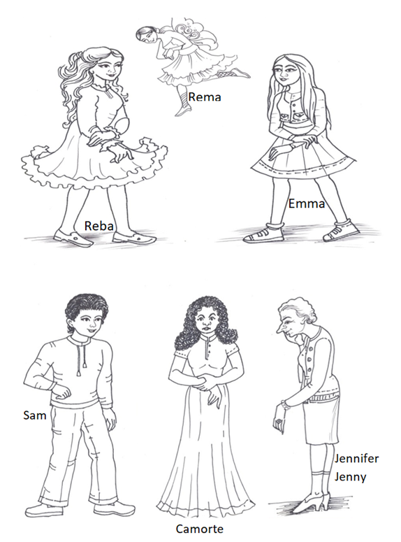
REBA & EMMA
Rebecca was sitting alone in her room. An eleven-year old orphan girl, with brown hair and turquoise-greyish eyes, she was thinking about the next day which promised to be very eventful for her, as well as other children of the orphanage, as they were being taken for a picnic.
Rebecca had no living relative in McCluskie, the place where she was born. Separated from her parents, after they met with a tragic accident, she was sent to ‘ST OLIVERASIN ORPHANAGE’ named after the great grandfather of its present caretaker, Miss Jennifer Jenny.
Rebecca was sent to the orphanage as there was no one in McCluskie to take care or give her shelter in their house as they considered her cursed and thought her presence might prove inauspicious and take away their blessings.
It was at St Oliverasin that Rebecca found a good friend Emma, who used to call her Reba, as she found it a little awkward to pronounce Rebecca every time she had to take her name. Soon all others also started calling her Reba.
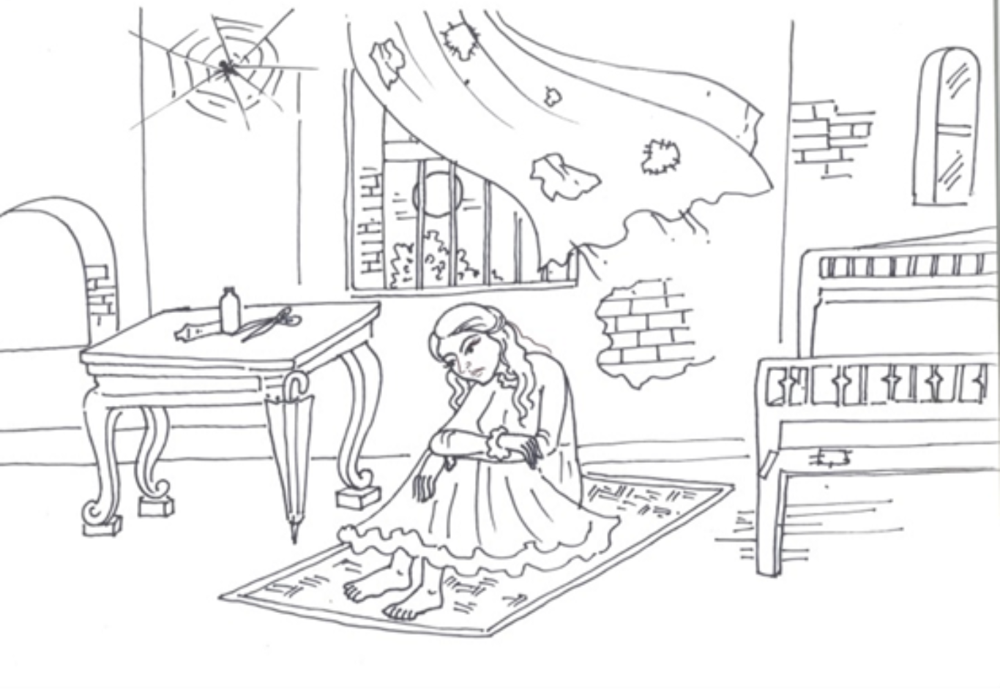
In the orphanage, Reba and Emma shared the same room, located in the leftmost corner of the top floor. It earlier served as the storeroom for the orphanage. It wore a decrepit look as coat of paint was peeling off in several places and a wooden plank beside the door was missing.
The room had a large window with a broken glass and a blue worn out curtain. The window was created after Reba and Emma shifted in. Despite its terrible condition, Reba and Emma managed to keep the room liveable by keeping it neat and tidy using whatever discarded and abandoned things they could lay their hands on. It was just the cobwebs hanging on their ceiling, which they couldn’t reach on their own, that gave it a creepy look.
The door of their room had a paper-hanging made from used notebooks of Reba and Emma. There was a damaged toy plane hanging from their door latch which had once ploughed through their window. The kid flying it outside the orphanage had lost its control, and later when Reba and Emma tried to return it, he refused to take it back as he found it broken.
A small jute mat lay just in front of their beds, and, the wall beside it had a photo frame of Emma and Reba, with the pictures peeled off from their old identity documents, and, pasted on a piece of paper with scenery to provide background.
There were two beds in the room one on top of the other. They strictly could not be passed off as a bunk bed as the beds were simply stacked one over the other to accommodate them within the small room. Emma and Reba always had to be careful while sleeping as Reba quite often slipped while climbing to her bed on the top. Emma too often bumped her head while waking up in the morning. The bed sheets were stained, which, could not be removed despite the best efforts of Reba and Emma to wash them.
In the corner was a rickety table with three unsteady wooden legs, and an umbrella in the place of the fourth one. An old table clock – rummaged from the store, a pile of old books and stationery, a pair of scissors, and, a bottle of glue were mostly found on the table top.
A corner in the room had a short cupboard with three shelves. Its top shelf was used by Emma for her dresses and books, the middle shelf by Reba for her dresses and books, and, the bottom shelf shared by both of them, was used for keeping their shoes and unusable stuffs.
Between the bed and the cupboard there was a small. It was made by Reba and Emma using a large cardboard packing box. They had made two crudely fixed shelves made up of canvas cloth reclaimed from a torn bag. The bag was rejected by one of the earlier occupants of the orphanage, and, was lying in the storeroom which was now being used as room for Reba and Emma. They used to keep their pencil case and other light personal belongings like rubber bands, necklaces, and, a few safety-pins.
This room of Reba and Emma room was the poorly illuminated and was the smallest room in the orphanage. It was probably the most poorly maintained room at St Oliverasin. Seeing it one could easily guess that Reba and Emma were not amongst the preferred ones at St Oliverasin. The only thing that looked fresh and clean was a handkerchief placed over the otherwise torn pillows. Miss Jenny, the caretaker, took special care to keep these on top of every resident’s pillow. She had superstitious belief that, one fine day the hanky will drain away their memory at night and on waking up, they will go away from orphanage without any memory of it. It certainly seemed a better idea than the children walking away with all their knowledge of it, as now they knew too much of its secrets. She wanted people to have a wonderful opinion about herself and the affairs of orphanage as she was heavily dependent on public charity to run the orphanage and manage its expenses.
Miss Jenny took sadistic pleasure in criticising the orphanage children and making them suffer emotional pain by repeatedly reminding them of the misfortune wreaked on them by their orphaned state, and, that they should learn to cope with their continued misery in the form of bleak destiny as there was no one in the world to help them. She often asked them to shun their unrealistic dreams and desires as they would have to fend for themselves. Her strategy perhaps seemed to be to make the orphans lose any hope about their future and believe that this Oliverasin its poor condition and shabby treatment was still the best hope for them.
Miss Jenny had a wicked sense and once reminded Reba that her parents died in a car crash, but UNFORTUNATELY, she had survived. As Reba was left speechless not knowing what to say, she enjoyed her confusion by asking is she sad at having lost parents or was she happy still surviving.
Miss Jenny loathed Reba and Emma as they, to the best of their ability, blocked negative emotions by not taking to heart Miss Jenny’s disparaging remarks and discouraging words.
Miss Jenny, the only daughter of Mr Oliver, took great pride in her own ancestry and never hesitated in reminding others of her illustrious family history. While introducing herself to strangers she was in habit of talking about her father and great grandfather of exalted position saying, “you must have heard his name, haven’t you”. Her desire to portray herself and her family in highest esteem often led her to pull down others and their family background.
Miss Jenny was massively tall with grey-red hair, which barely reached her ears. Her usual outfit was dull coloured narrow skirts, classic looking white shirts with a bright red sweater, and, pink socks under her shoes. She wore accessories like bracelets made of seashells and one obsidian ring – her most precious possession. Her dressing behaviour suggested of her strongly superstitious nature.
She lived in a dully painted, low lighted, cluttered room on the ground floor. There were dozens of empty bookshelves on the wall, as the books usually lay scattered and piled on the floor along with her clothes and stationery. Hers was probably the most luxurious but very messy room in the orphanage. During the time of her great grandfather it served as the common room of the orphanage.
All students of St Oliverasin, except three including Reba and Emma, respected her and obeyed her for her elderly and matriarch status. However, Miss Jenny hardly responded in terms of her love and affection for them.
Orphanage children, except a very few whom she favoured, did their best to avoid Miss Jenny’s presence. They particularly hated the orphanage’s monthly picnics. It was full of drudgery for them having to obey command and orders of the caretaker for odd activities. Miss Jenny believed only she was entitled to relax and enjoy during these outings with children meant only to partaking through managing errand for her. This time for the picnic, they were visiting ‘THE GARDENS OF PARADISE’.
After more than ten years of experience with Emma and Reba, Miss Jenny could not resist the thought that they were going to run away. Lately her sharp eyes had been observing their unusually confident and reassuring behaviour, instead of their typical meek responses. They were spending more than usual time together with each other and often avoided places where others were present. Whenever anyone came towards them they quickly changed the topic and dispersed.
Miss Jenny’s first doubt always veered towards Reba as she was always suspected to be the mastermind behind all their plans and mischiefs. Emma was never confident to do something bold, but Reba always was in favour of trying something daring.
Miss Jenny didn’t let them have much time together in private, be it their room or classes. She gradually started decreasing Reba’s influence over Emma. She separated Emma from Reba by making her sleep in her room over a pile of old newspapers covered with ragged quilt. Emma had to rearrange the newspaper stacks every day in order to make her comfortable. Miss Jenny didn’t allow Emma to attend the classes, which Reba attended, on some pretext or the other. So she used to give Emma extra lessons for the ones she didn’t attend. Reba was made to spend most of her time alone in her room without Emma.
Today was no different and Reba and Emma were not at all relishing this treatment by Miss Jenny. However, both of them by this time were strong in their resolve to escape Oliverasin as soon as possible. Not meeting the eyes of Miss Jenny they planned their escape.
Their plan went something like this: once they were in the “GARDENS OF PARADISE” they had to meet in a place away from the picnic spot, while Jenny would have been busy enjoying herself and gossiping with people.
****
THE PICNIC
Everybody hurried through their bath and after dressing up went to the common room – the predestined place for meeting before boarding the bus for the picnic.
Jenny in her excitement reached before anyone else, and, started shouting at everyone else to make haste. The shrill was loud enough to wake up the dead.
Before setting off for the journey to ‘THE GARDENS OF PARADISE’ Jenny cautioned all not to forget their responsibilities while enjoying. All of the children were allowed to take one bag of whatever they liked with them. After a short lecture of how to behave in the picnic, Jenny commanded them to sit in the bus which will take them to the picnic spot.
It was a long, boring journey. Reba was made to sit with Moola, a plump girl in the orphanage with violet hair and a pierced nose. She partially liked as well as disliked the orphanage, often talking ill about it when with friends but praising it whenever Miss Jenny was within hearing distance. Emma was made to sit far away from her near Jenny.
In a journey like this Reba and Emma could not do nothing and sit idle. They convinced Moola to give a few small crackers that she had rummaged from Miss Jenny’s personal storeroom. Emma cautiously placed the crackers under Jenny’s chair. The look on Jenny’s face was worth seeing when she sat in the bus and BOOM, the fire cracker exploded. All the children burst into muffled laughter, seeing the person they so feared and dreaded, standing horrified and stupefied in the aisle of the bus.
Miss Jenny was enraged and furious, but too embarrassed at the same time, to express her annoyance. She suppressed her urge to ask for the person who placed the cracker. She was intelligent enough to understand that the children were rejoicing in silence seeing her in this trouble state and very well knew nobody is going to speak up the truth about who placed the crackers. She decided to avoid making further show of herself and went back to her seat.
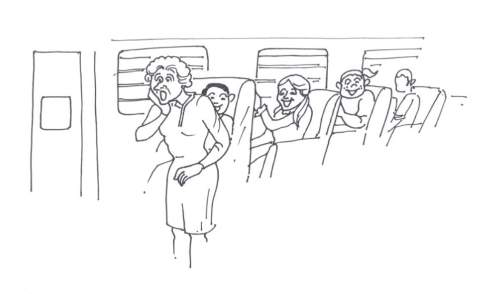
However, this remained a topic for tête-à-têtes for the rest of the journey. The most unusual though happy part of this was that Miss Jenny didn’t scold anyone. The children still could sense trouble lurking around them. They were sure of Miss Jenny venting her ire on them on some other pretext as she would definitely be looking forward to extract her revenge for being made to suffer publicly this embarrassment and humiliation.
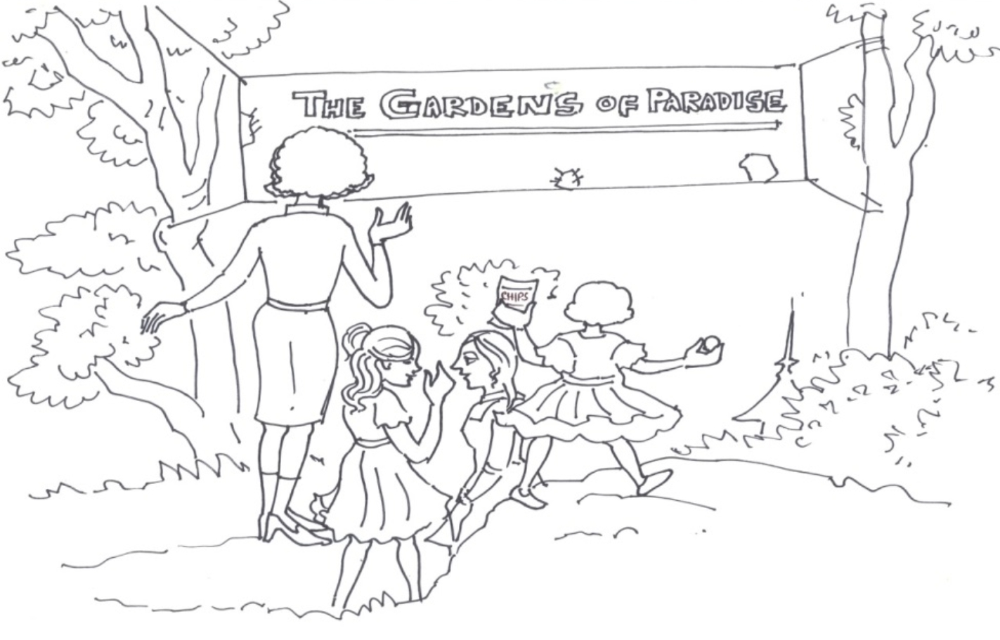
After reaching their destination, which was indeed a pleasant location, an old plaque with inscription quite hard to read, announced that they were entering “The Gardens of Paradise”. The garden was huge with unending boundaries. It had only a few guards all of whom were active in their patrol to protect the whole garden and maybe a few places around it too.
After Miss Jenny’s instructions to gather back in an hour’s time to have lunch everyone dispersed in small groups exploring different nooks and corners of the garden. Miss Jenny held back a few children, including Reba and Emma, and made them tie a hammock between two trees as she sat on a reclining chair.
Reba and Emma were the first ones to complete their task, and, get away from Jenny without attracting anyone’s attention. As planned, both of them gathered as much food as they could fit in their bag packs. They then reached a huge tree at the far end of the picnic spot near the forbidden area – the venue of their rendezvous – taking separate routes, so as to avoid alarming Miss Jenny about them attempting to run away or even meet in isolated places. More than worry of them landing in trouble, Miss Jenny was concerned about what explanation she will give to the people, especially the funding partners of St. Oliverasin, if any of the children are reported missing.
Once they reached the tree Reba informed Emma in a hushed voice, that she had packed all the necessary things like, the wall clock, a few bottles of water and two pairs of dress for each of them yesterday itself, when everyone was busy having dinner down in the common room.
‘That’s really good!’ exclaimed Emma with a little smile, and asked, ‘What now? We escaped Jenny but they will soon find us here.’
Reba looked around just to ensure no one was watching, turned back to Emma, and said, ‘Don’t look back even once, go straight and enter the forbidden area, don’t worry I’ve read all about the gardens of paradise, there are no guards in the forbidden area, it’s our best chance to get rid of the old beast. We will escape the gardens through the forbidden area. But first we need to get in there.’ She said in one breath.
Emma opened her mouth a few times to argue but was left with no choice but to yield and do whatever Reba suggested. Trusting her friend as always, she closed her eyes, ran as fast as she could until she was in the forbidden area. Reba followed her close behind looking back from time to time to see whether anyone had noticed them.
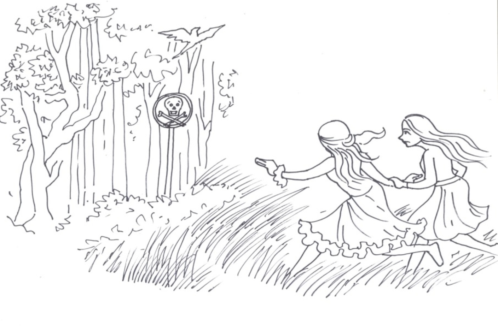
In a few moments both of them were inside the forbidden area. The forbidden area was like a forest in appearance as well as in expanse. There were many tall trees forming a canopy. The birds, of so many different kinds they could not identify, were chirping in their nests.
After they travelled a small distance the forbidden area got denser and darker. The surface was damp with many moss covered sharp edged pebbles scattered on the ground. They crossed lot of thorny bushes on their way. They badly hurt their feet, with many scratches and bruises, as they covered the distance in a very short time.
‘Reba, can we please stop now? I don’t think this is ever gonna end.’
‘We shall need a shelter for tonight. Let us make a tent. We definitely can’t rely on the design we were learnt at St Oliverasin as we do not have all items we may need. Let’s design it ourselves even though it may take us some time. Please pass on the bags to me.’ Seeing no response, Reba shouted, ‘Emma are you listening! I am talking to you. What are you doing?’ Emma was startled and immediately jumped off the tree trunk she was trying to climb.
‘Um, nothing I thought I could gather some fruits maybe. But there aren’t any in sight. Wait! Giving the bags. Kept them over there, perhaps.’ Emma lunged towards the bag and tossed it quickly to Reba.
‘Obviously you won’t get any here, besides we already have enough food for at least till the time we escape from here. I will go and get some wood; in the meantime you tie together the bed sheets I kept in the front pocket of this bag, with the strings you would find there. We will need it to make the tent top.’ Saying this Reba swiftly disappeared behind a big tree.
Soon Reba returned and saw Emma still trying to tie the four bed sheets together. She joined her in fastening the sheets and then secured its edges with thin twigs they found around themselves. Emma then stood up holding the centre of the joined bed sheets as Reba nailed its four corners to the ground with heavy wooden log they found fallen under the tree nearby.
Emma then went inside the tent and placed another bed sheet to cover the prickly grasses. She then placed a tall tree branch, Reba brought from somewhere, in the centre of the tent to raise its ceiling a little higher.
The tent looked very uncomfortable, but was good enough to give them night shelter. The crude tent pole made it even tougher for them to move their body or lie straight. Threads and grass twigs were jutting out of the sheets. The grass pierced their clothes irritating them making it difficult for them to catch sleep.
Reba started a fire right outside the tent to keep herself and Emma warm, and, came inside the tent. They played card games till it completely bored them, as no one won. They didn’t really know how to play, but thought it would be fun to while away their time inside the tent, playing it with their own rules. Moola had given these cards to Reba the previous day while they were eating lunch. She told her that she had found it in Miss Jenny’s storeroom in the same place from where she had found the crackers. Unfortunately making rules for playing cards didn’t turn out to be as easy as Reba and Emma.
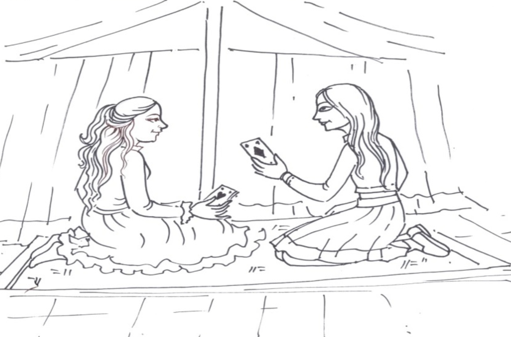
Emma was too tired and unable to focus on the game and their rules and suggested they shall wind up the game.
As the night’s dark curtains fell over, they started hearing eerie noises. Even chirping of birds made them jittery, as they would have been, on hearing a tiger roar.
They heated some food for the next day on the fire outside the tent but some animal took it away, as they were busy making the tent stable after its central pole had been knocked down unknowingly by Reba.
They had no more energy to cook once again so they decided to sleep.
But sleep kept them waiting for long as they both were worried about not having any protection from the wolves, about which Miss Jenny had alerted the children immediately after they had reached their picnic spot.
Neither of them talked, until Emma asked.
‘Don’t you want to sleep?’
‘Not feeling sleepy, but what about you?’ Reba inquired back.
‘I am scared to my bones.’
‘Forget about everything, imagine you are in our room, and I am with you. Okay? Well I am scared too. But I don’t think it would do us much good, you know, just thinking about our predicament. We must face the problems as they come, but now shall try to sleep at least.’
‘Yeah, right, huh, good night.’ Emma said falling back again on the crumpled bed sheet on the ground.
They slept at two but something again woke them up.
THE DEER
‘Reba wake up, I hear noises.’
THUMP! THUMP! THUMP! They could hear footsteps of someone. Their first thought was, “Everything is over. Miss Jenny found us and she will definitely do something cruel.” The best they could hope was to be found by the garden authorities and their worst fear, which looked so much possible now, was being devoured alive by some beastly animal.
‘I don’t think there are wolves around here.’ Emma said.
‘Nor do I.’
They both clenched their hands and sat upright and waiting for a big scary surprise when Reba suddenly yelled,
‘Whoa Sam!’
‘You scared us to death!’ Emma cried.
‘How did you know that we were here?’
‘Well, Jenny was looking for you two, so I had enough time to bring her…’ Sam had not completed but Reba and Emma interrupted, ‘What? We thought you were always on our side.’ They could have never dreamt that Sam could betray their trust, and tell Miss Jenny their whereabouts!
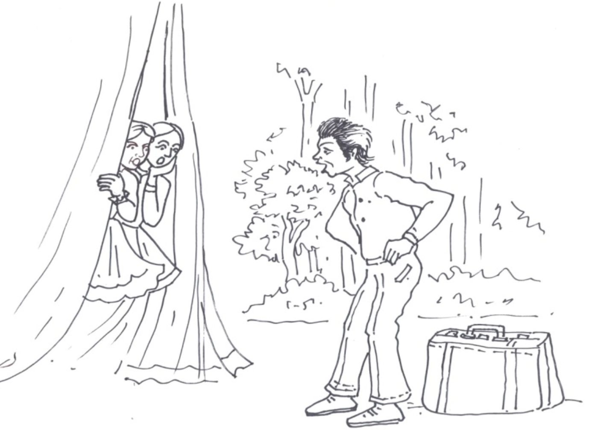
Sam was another boy in St Oliverasin. He was a tall, with black hair and indigo eyes. He disliked the orphanage for many things, but liked Reba and Emma for their amicable and cheerful nature, and, always supported their ideas.
‘No, no, no, no, I don’t mean that. Jenny went looking for you two, so I had enough time to bring food and water from her personal stock, as there wasn’t any left in the common stock. I can’t have stayed there with her any more particularly when I know you all have managed to escape, and I know the way to escape too.
I somehow, under the night’s curtain avoiding Jenny’s hawked eyes, came over here to you two with one of Jenny’s powerful flashlight scaring away all the tiny wild animals who may be around in the forbidden area.’
‘Sorry, I mean, thank you for not telling anything to Jenny, but we don’t have your clothes, or even enough space for you, our tent is too small for all of us to fit in.’ Emma said.
‘Never mind, I brought my things along with me and also your things. For tent I have brought the cloth of an umbrella for the roof, and, can sleep on the bed sheet I brought.’
‘Good! And thank you for bringing our things.’ Emma said in a lets-have-a-talk kind of voice. Reba instantly remarked, ‘I think it’s pretty late so probably we should try to catch some sleep if possible.’ in a not-so-good-idea kind of voice.
‘Right, I too am tired after travelling for nearly the whole night trying to search you two.’
Now that there was more food, more clothes, and most important of all, comfort of one more reliable person to depend on, they were certainly more relaxed.
In the morning, after sleeping for nearly six more hours, Emma was the first one to wake up and wake others up.
‘C’mon Reba, Sam wake up it’s quite late in the morning.’
‘Is it? Already?’ asked Sam half-yawning.
‘Yeah, its half past nine already.’ Emma said grumpily, ‘I am going for a walk, probably I’ll find some water, our supply is nearly over, while waking I spilled a little too.’
‘I am coming too.’ Reba said.
As they looked at Sam he stood up wiping the grass stuck on his pant. He had been sleeping lying in prone positioned, with his plastic shelter fallen and covering him. Getting up he said, ‘Can’t leave me alone, can you?’
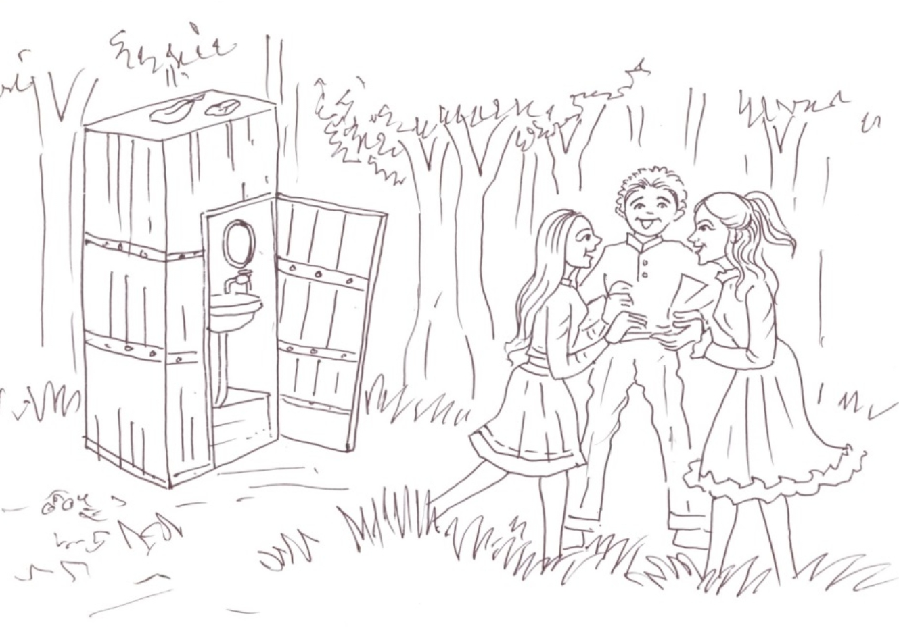
They all passed through a number of trees, bushes and flowers. Lastly after a short walk along a large lake, they reached a huge banyan tree. Right beside it they saw an old dilapidated structure made of wooden planks with fittings suggesting it might have been earlier used as a washroom. Their initial thoughts, if any, of using it for easing themselves vanished as they peeked inside and saw many ants and mice.
They talked for a while and then proceeded towards the lake to drink water and also to fill their empty water bottles.
‘Reba, Sam, have a dekko at that! It’s a deer. Think we should follow it maybe we’ll find more deer.’ Emma was pointing towards a beautiful golden deer with prominent silver spots.
‘You are right let’s follow it maybe we can make some more new friends.’ Sam said as he started following it with the other two.
The deer led them to a massive strange tree, with rose like leaves, and, loads of apple like fruits. They hid behind a blueberry bush keeping a close watch over the deer. As they waited they started eating tasty blueberries hanging in bush in front of them, and also, stocked them in their pockets after they could eat no more.
Suddenly they realised that the deer was disappearing somewhere. But oh! It wasn’t disappearing; rather it was going inside a newly created opening formed near the root of a huge tree.
‘Hurry! Jump in before the opening shuts us out!’ Sam shouted.
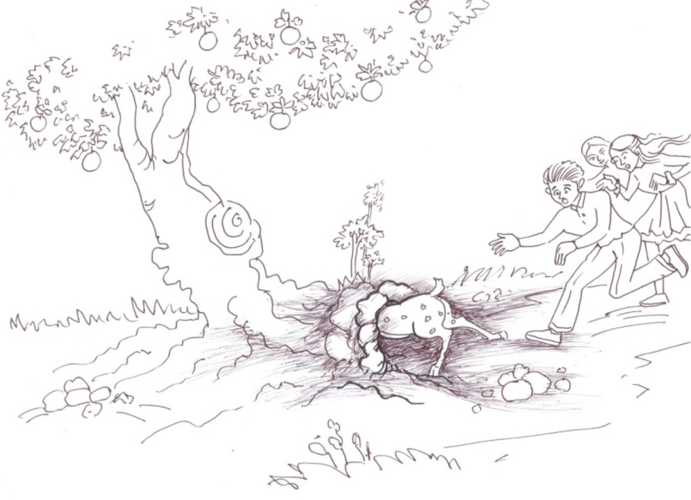
They jumped down the opening with all the courage they could muster. They were now sliding down a long bumpy slide, shaped by the long roots. All their wounds and bruises they had suffered on their way to the forbidden place, and in running after the deer, healed instantaneously. They were surprised that they were not feeling any pain despite the rough slide and subsequent fall. They thought they were lucky not to have hurt themselves and suffered bruises. They had expected it to be a rough landing, but no, it was as if they entered some zero gravity zone at the end of the slide making them feel as light as a feather
They found themselves in a beautiful place with lots of attractive flowers and unusual striking trees. They felt comfortable as they expected no evil soul, least of all Miss Jenny, to come to this enchanting place, as they may not be allowed entry through opening in the huge tree.
As the deer kept running forward it transformed into a beautiful tiny fairy with wings. Reba, Emma and Sam couldn’t notice this transformation as they were too engrossed and mesmerized by the beauty of the place with pink clouds in its radiant sky.
‘Wow it is so beautiful here!’ exclaimed Emma.
‘Indeed it is but where are we?’
‘I don’t know, let’s ask someone.’ Sam suggested.
‘Look at that tiny creature, looks like a fairy. Wait, a fairy? A fairy! We found a fairy!’ Emma had at last spotted the deer who transformed into a fairy. Emma was really excited as she loved fairy tales. Ever since she was a toddler she had always dreamt of meeting a fairy. ‘Isn’t it a dream come true for all of us!’
‘Let’s go near her.’ Reba said.
They ran towards her and as they reached close Emma asked the fairy excitedly, ‘Excuse me, can you please tell us where we are?’
The fairy didn’t respond. She just looked at three giants whom she had just encountered and smiled giving a shrill whistle. On her whistle a group of fairies of her size suddenly appeared out of nowhere with a smile. They were all of just six inches and had beautiful sparkly wings from which whenever they flew shimmer came out. The shimmer of a few fairies formed the word ‘WELCOME’ in the air.
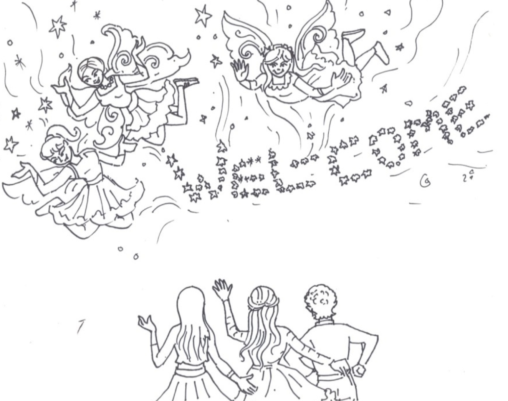
Another fairy flew towards them and tried to gently pull Reba towards her.
‘I think she wants us to follow her.’ Emma guessed.
The fairies nodded. They led them to a giant gate decorated with bales of beautiful flowers and leaves. Emma went forward and tried to open the gate, but a fairy flew in front of Emma’s face and shook her head suggesting she should not try it. Emma looked at her friends who were now being pushed by the tiny fairies towards this gate Emma had tried to open.
‘Let’s open the door together.’ suggested Emma and looked at the fairies who were nodding their heads now, giving them way to move.
‘Okay on count of three we’ll open the door,’ said Sam, ‘One.... two ....three!’
They all pushed open the door. There was a long flash and everyone was dazzled for a moment. They saw themselves standing on a small piece of land. Around them there were hundreds of human sized fairies of different genre swarming in the sky. There was no land here except a tiny piece on which the three runaways, Reba, Emma and Sam, were standing.
****
THE FAIXIELAND
‘Excuse me!’ shouted Sam to a big male fairy with black hair.
The fairy briskly came towards him and with an anxious expression asked ‘’ow can I ‘elp you?’ He had a French accent. No matter how hard he tried he could not hide his suspicions about the three strangers he had just met.
‘We met a few tiny fairies who directed us here.’ Sam responded, trying to allay some of the doubts of the fairy.
‘What did zey do?’ The fairy asked frowning.
The three, Reba, Emma and Sam, had premonition of something nasty, as they saw the face of this fairy. Sensing trouble, all within themselves had resolved to be truthful in their answers. Emma narrated their whole story of how they saw the deer, which led them to opening in the tree, their slide, the first encounter with the tiny fairies, and, the smiling tiny fairies directing them to the giant door.
‘Great come wiz me.’The fairy said, his voice indicating easing up of his anxiety and stress.
‘But how, we don’t have wings and there is no land here?’ Sam remarked. The thought of flying was unimaginable for him at this stage.
‘Oi! I forgo’, you can’ fly. Well whaz are you’ names?’
‘I am Emma, she is Rebecca you can call her Reba, and he is Sam.’
‘I am Christophe,’ he introduced himself. ‘Rowena come with Emily, fast!’ he called two fairies who were talking about something, flying nearby.
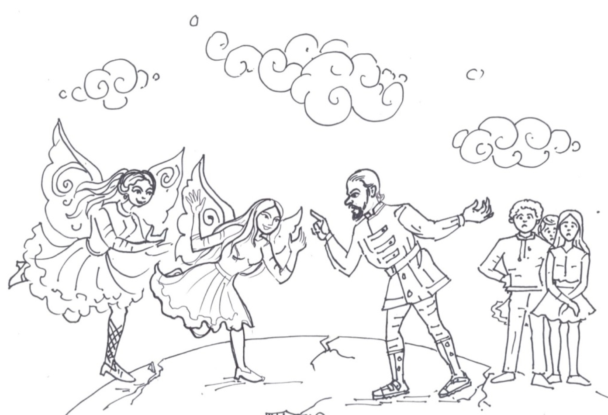
‘Hi Christophe! Who are they?’ The two fairies almost spoke together.
‘She is Reba, zis iz Emma, and ‘e iz Sam. Guarpies smiled at zem I need ‘elp carryin’ zem.’ Explained Christophe
‘Really?’ Said Emily, the fairy with blonde hair and light blue eyes.
‘I am so glad you found them!’ Said Rowena, one of the fairy with black hair and brown eyes. ‘Hi Reba, I am Rowena. Hold on to my hand tightly, and Emma, you Emily’s, Okay?’
‘Sam you ‘old on to mine tigh’.’ Christophe said.
The trio held their breath and lo! In moments they were all soaring high in the dazzling glittering sky.
Reba asked Rowena, ‘Where are we? And what are Guarpies? And why and where are you taking us.’
Hearing her Emily replied, ‘This is Faixieland the glorious world of fairies, where the pixies are treated equally. Guarpies are pixies who are destined to perform the same task, from their birth till their death.’
‘We takin’ you to ze Faixielan’ palace. You all are the chosen ones, who as per popula’ belief ‘ere are supposed to bring peace to Faixieland.’ Christophe said.
‘We have reached the palace. No more questions now, ask us later.’ Emily sought to remind everyone of the fact that palace was near, even though they had yet to reach there. She was apprehensive of Christophe revealing a little more than he should. She wanted to sound alert to Christophe and at the same time not sound rude or discourteous to Reba, Emma and Sam.
The fairies landed on the veranda of a beautiful well decorated palace. The palace had lots of hangings made up of unfamiliar material leather, which gave it unusual beauty.
They went inside the building opening into a court, and, saw a few guarpies on a princess’ shoulder, who was sitting on a beautiful throne. Emily, Christophe and Rowena paid their obeisance, and seeing them Emma, Reba and Sam too dropped a courtesy. The princess returned their gesture with her own low bow.
‘Hi everyone I am Helena Bilius, the princess of Faixieland, daughter of Helga Bilius. But for you all I am Helley. The guarpies have told me all about you. Rowena, Emily and Christophe will take you to Olivia, she’ll give the perfect pair of wings for you all, and then you can fly or rest, as per your will. The mirror world time, the world from where you have come, is different from ours. It will be night here soon though it is afternoon out there. Enjoy yourselves, the Faixieland is yours.’
As they all went out into the corridor, Rowena asked, ‘Did you like our princess?’
‘We did like her pretty much.’ Emma replied.
‘Where are we going?’ asked Reba.
‘To Olivia’s shop. We kan enter it zouh the palace or zouh ze main market. It iz a part of the palace. She iz aa preety humble woman. Sells wings for people like you. ‘er business ain’t going too good, but still, ‘appy you know, poor lady.’ Replied Christophe.
The corridor led to the hallways of the palace which were all beautifully decorated. There were many photo frames with portraits of, maybe, the royal family and their ancestors. All the portraits showed emotions even though absolutely still. There were different models of lamp posts with caption ‘MIRROR WORLD LAMPS’, and also what seemed to be post offices, and, tiny models of gardens and parks. They found a photo frame with the name ‘Helena Bilius’, written at its bottom. Beside it was the portrait of Helga Bilius. Rowena informed that Helga Bilius was Helley’s mother.
Suddenly a pixie flew past them. Seeing it Sam asked, ‘Is it a guarpy?’
‘No, guarpies have pink gloves, and a pixie who is finding work has white ones, but this one seems to be a personal pixie of someone, as it has blue gloves.’ Rowena explained.
‘We are ‘ere! It’s Olivia’s shop.’ Christophe said signalling them to go inside.
As they went inside Rowena greeted Olivia and said, ‘Please give us the perfect pair of wings for Emma, Reba and Sam, the chosen ones.’ She seemed to say chosen ones sounding mystical, but her message was well understood by Olivia.
‘Beautiful! I am Olivia, come in have some water, my dears.’ Olivia the old fairy said, in a high pitched shrill voice, as she welcomed them to her shop. She didn’t let everyone inside her shop immediately. Rather, made them wait in lounge outside shop, before offering them their wings.
Sam you first come with me, I will give you your wings.’
Olivia took Sam to another room, her main shop full of beautiful wings. She started searching the best pair of wings which suited Sam.
She looked at Sam for a long time whispering his looks to herself. ‘Okay, tall, black hair, indigo eyes, interesting, interesting, got someone like that after ages. Ah! Got the perfect one.’ She flew to one shelf and brought a blue dragonfly wing with white, yellow, red and grey designs. She applied a type of magical invisible adhesive labelled the wingner, to this wing pair and attached it to Sam’s back.
‘You can go now. Just think wherever you want to fly, and you will.’
As Olivia and Sam came out, everyone exclaimed their appreciation and got curious and excited for their own pair of wings.
‘Emma next.’ Called Olivia.
Emma rushed in after Olivia expecting to have a look at her own pair, but seeing a range of wings she was dumbfounded.
‘Long, curly, blonde hair, blue eyes. There we go!’ Olivia continued with her work
She attached purple butterfly wings with white blue and green design on Emma’s body. She usually gave dragon fly wings to the male fairies more than seven years of age. Butterfly wings were attached to girl’s back as it symbolized grace. The dragonfly wings represented chutzpah and manly hardiness. Their wings were concealed, most of the time, except when they had to fly.
‘You next.’ Olivia said looking at Reba smilingly.
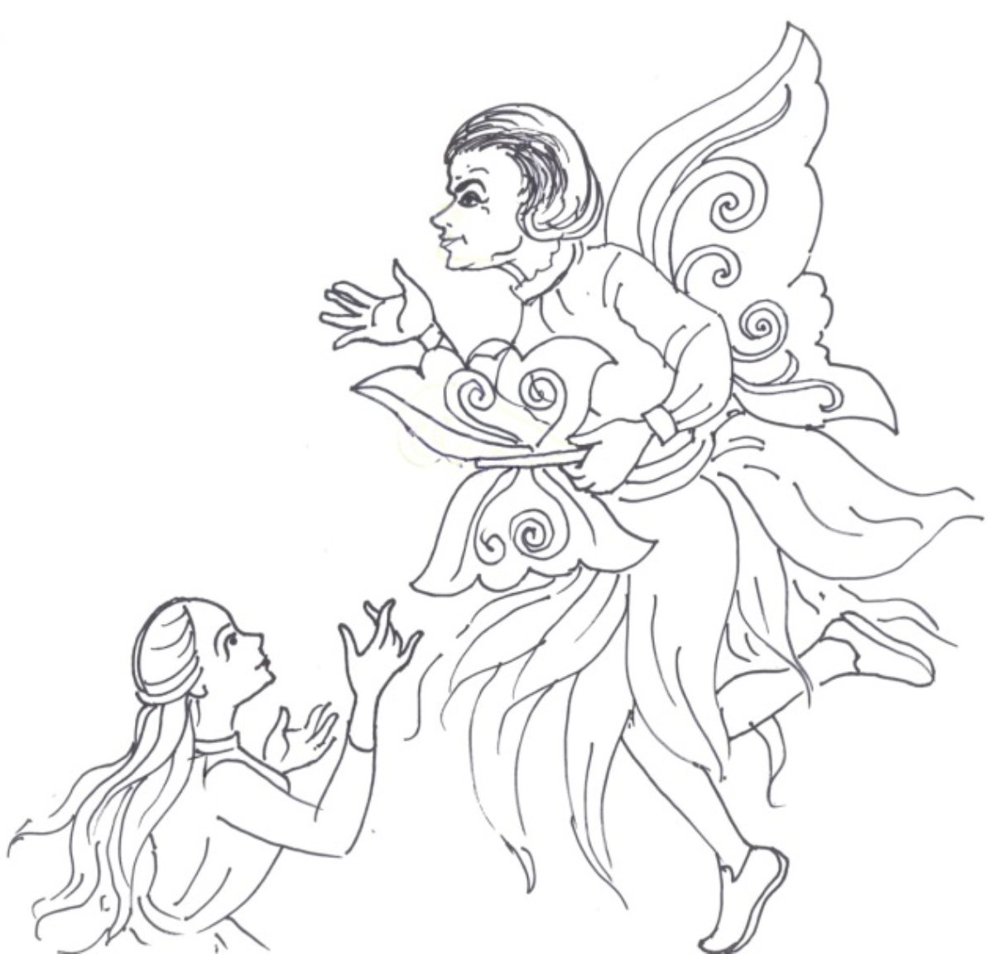
‘Okay turquoise greyish eyes, brown curly long hair.’ After a long pause Olivia said, ‘Knew this day would come. Oh dear! Your highness I have believed and waited for this all along, and didn’t find her, please forgive me if I am wrong in picking up the right person.’ She then brought a beautiful pair of glow-in-dark pink butterfly wing with turquoise, orange, purple and white designs and attached it to Reba’s back.
As wings were fixed to their body, there was nothing that could set them apart from the fairies in appearance. They looked exactly like any other fairy of the Faixieland. After sometime Rowena announced, ‘Time to fly.’
They were then guided and encouraged, by the fairies, to fly using their new wings which adorned them now making them look more fairy than humans.
Reba was the first one to fly. But her happiness didn’t last for long within seconds she fell down having lost her control.
Slowly Emma got hold of what the fairies were trying to demonstrate, and, flew in a straight line before bumping herself into a wall.
It took some time before eventually everyone succeeded in perfecting the art of flying. After flying for about an hour, Christophe led them to their respective rooms. Reba bade Christophe farewell as she entered her room. Without sparing a single glance at her magnificent room, she let herself fall on the soft bed burying her face in the pillow. However, the thoughts of the entire day events activities did not allow her to sleep. Emma on the other hand was filled with enthusiasm and kept flying inside her room. Sam slept immediately after entering his room.
****
THE DREAM
Reba could not sleep easily. There were a thousand questions about Faixieland churning in her head. She by this time had three fairy friends who did not reveal anything about the Faixieland. Whenever they tried to inquire about Faixieland the fairies diverted them to some other topic such as flying lessons. Why were she and her friends being treated so nicely? According to many fairy tales she had heard and read, the mystical fairies didn’t welcome human intrusion into their life and land. What were the fairies’ intentions and plans? How will they, three eleven year old children, bring peace to their land? And why and how does peace not exist in such a magnificent world, where even wounds and hurts are healed instantly and nobody gets hurt despite seemingly perilous falls?
With these questions and exploration of their possible answers, Reba slowly slipped into a deep slumber.
But unfortunately Reba’s ordeal was not over. Her thoughts when awake gradually merged into the dream after she slept.
She saw herself walking down a deserted street, under some terribly horrifying mysterious circumstances, when she found herself to be in some strange place, and, suddenly two glistening things and a big bird came right in front of her. She didn’t dare touch them as she was didn’t know about their origin and their purpose of coming to her. The bird glided down at brisk speed hitting her right in the middle of her chest and immediately she woke up sweating profusely and could not sleep any further. She kept on reassuring herself, which was all that she could do. ‘Just a nightmare, nothing more. A nightmare not related to this Faixieland. I was walking and not flying. It was not Faixieland any way.’
She was famished as she had not eaten for almost a full day now. Springing out of the bed she thought of flying, and voila! She flew out of her room and reached the kitchen through the hallway.
It was a huge kitchen without any usual cooking appliances, stoves or vessels. There were glittering silver and gold kitchenware, comprising predominantly plates and cutlery of different sizes were kept on ornate slabs, shelves and tables. The golden slabs were overflowing with fruits and nuts kept in silver plates and golden baskets.
A big table, instead of the usual stoves and grinders, had many magical pixie wands. Reba didn’t had much knowledge about these wands its use. She picked up one of these, not so easy to grip, as the wands were the size of hair clips. Its size definitely suggested that it was to be used by pixies. As Reba swayed the wand, a big cupboard with three shelves opened in the corner.
She flew swiftly towards the cupboard and found a shelf having apple pie with her name inscribed on it. The pie was beautifully decorated with caramel and cream, and looked delicious. Below it she saw two other shelves with the names of Emma and Sam inscribed on them.
The pie was heavy, big and hard to carry, so she sliced a part of it and flew away with it.
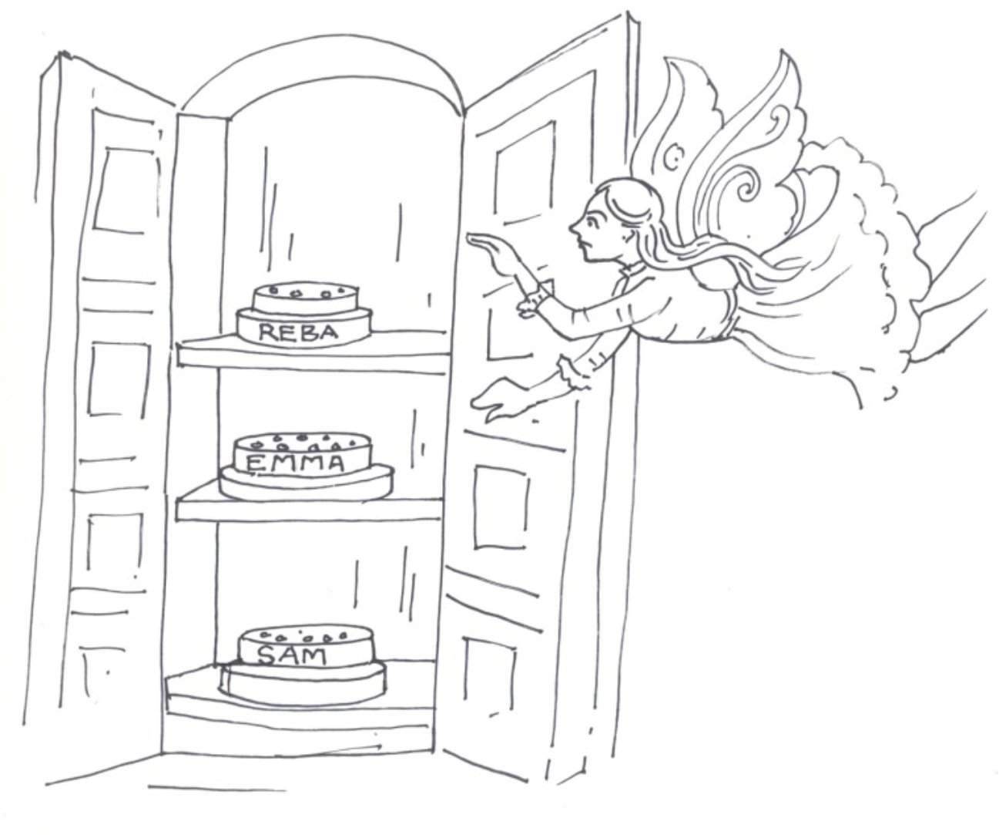
She finished the pie and then started closely examining useful items neatly arranged and placed in her room. It was huge and spacious room. There was a soft and comfortable bed in the middle. An almirah, made up of crystal and gold, was full of beautiful robes and dresses. Reba found many interesting things like an old diary behind her almirah. It had some kind of incantations for summoning objects, making potions and many counter spells for dark ones. She didn’t even realise that it was half past four in the morning. She went to bathe and dressed in what she considered to be the finest robe in the almirah.
While going to the dining hall, Reba thought she saw her last name ‘Roberta’ ] somewhere. When she turned back she saw a frame, adjacent to that of ‘Helga Bilius’, with ‘Rema Roberta’ written at its bottom.
‘Her name is so similar to mine.’ Reba thought. Rema Roberta's face too resembled Reba’s. She had the same brown hair that Reba had, and also, Reba’s twinkling turquoise eyes.
Thereafter, Reba found that all the queens’ portraits in that corridor had last name ‘Roberta’. Ignoring this as a mere coincidence she quickly flew towards the dining hall. Emma and Sam were already there.
‘Where were you?’ they asked.
‘Well, I was interrupted by the photo frames of royal family members.’ Replied Reba.
‘Oh! Good, come sit here.’ Helley intervened in between awkwardly.
Reba sat in front of Emma and Sam. Seven plates, spoons and glasses appeared on the table out of nowhere. Christophe spoke, ‘Zhink of whazever you want to eat, and it will appear on your platez.’
Sam thought of pancakes, honey and orange juice. Emma thought of mango juice and sandwiches. Reba thought of coffee, eggs and a toast. As they thought, these appeared on their plates. Their accomplices from Faixieland, had their own fairy food which the three from mirror world could not identify or relate to. It smelled and resembled as if many pancakes were crumbled and moulded into balls using honey as binding material.
After the breakfast Reba and Emma went to Sam’s room. Reba narrated to Emma and Sam her questions about their treatment and reception at Faixieland, and also, the dream she had last night during the short sleep she could manage.
‘Don’t think much about whatever is happening to us here.’ Emma suggested.
‘Yeah Emma is right, be relaxed, it definitely seems they are treating us like a much awaited guests. They surely shall protect us from evil and not allow any harm come our way.’
But Reba didn’t want to listen. She kept on thinking about her dream and about what the fairies might be up to. What if the fairies harm them? After her experience with Jenny she could no longer trust anyone.
After sometime Helley summoned everyone and asked them to accompany her to the fairy city.
‘We’ll be glad to.’ Was their reply.
They reached a big tower made of mirrors. It was almost as tall as ten grownup camels standing one on the top of the other. In a big hall there were many desks on which several fairies were sitting.
As Helley entered the hall she asked the trio – Reba Emma and Sam to – to sit in a special row reserved for them. The fairies and Helley then started animatedly discussing some issues amongst themselves and seemed to reach a conclusion after sometime.
After the fairies dispersed, Helley proceeded with the trio to the topmost floor which bore a bare look with no furniture and a missing wall giving full view of fairies swarming around the building. She reached the edge of the floor and announced, ‘You all will be happy to know that we have found the chosen ones. In their honour we are having a special ball tomorrow.’
‘Why are you organising a ball?’ Reba asked as Helley finished.
‘For you all, because you are special.’ Helley replied hastily and abrupty.
By this time Reba understood that Helley didn’t want to reveal anything about the chosen ones. She therefore just limited herself to proclaiming them special while announcing the ball. Her special could have meant anything. During a discussion with fairies, a little earlier, she had heard Helley use the word “special” for a prisoner who broke out of the prison. She had told the fairies, “We have found our special guests again and they are back in their paradise -their prison.”
Reba knew that even if she asks about “special” now, Helley won’t tell much to her. So she decided not to bother about it and returned to the palace taking leave of Helley.
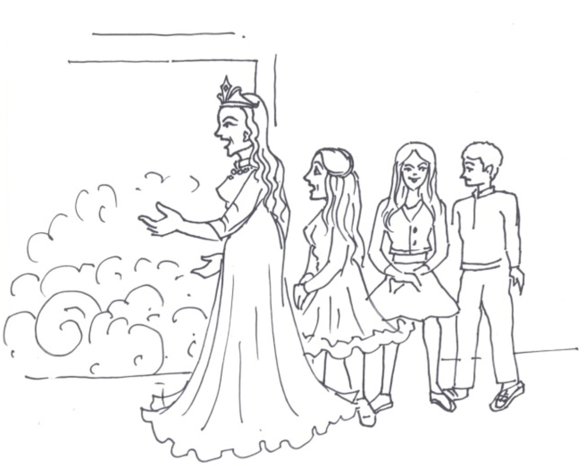
****
THE BALL
Next day in the dining hall after breakfast Rowena gave Reba her dress. Emma got a beautiful gown brought by Emily, and, Christophe brought a dress for Sam.
As Reba kept thinking about all the strange happenings of the previous day – about being the chosen ones in Faixieland, her nightmare, and, being termed ‘special’ by Helley, she took her dress and went to her room without talking to anyone.
Absorbed in her thoughts she didn’t realise how quickly the next seven just flew away. She was reflecting on the general affairs discussions Helley had with the other fairies in the tall mirror tower. Probably, the fairies wanted Reba and her friends to solve the issue of the latest mass breakout of frisoners – the prisoners of the fairy world. But then they were caught again. Weren’t they? It didn’t make much sense to Reba, as the fairies already had very strong army with magical powers, capable of achieving much more than what the trio were capable of. Reba was getting an inkling from her dream and the mystical world she had read bout earlier, that may be, they were being ceremoniously treated in Faixieland to be sacrificed for some purpose. Even though her two friends were enjoying their wonderful time here in Faixieland, she was gradually getting convinced that they may not be able to return to their own world.
She kept on suggesting new reasons to herself for being detained and being treated royally at Faixieland. However, she could not conclusively see anything sinister in the fairies action or behaviour. She gradually convinced herself that maybe the fairies didn’t have bad intentions but just wanted to keep them to do works related to the mirror world.
She drew out of the shelf a book and started reading it. She did not even realise how fast time passed when Rowena reminded her that it was time for the ball. As usual, engrossed in a book she lost the track of time.
Although she was late, she managed to dress up quickly. Till now she couldn’t give a serious look to the dress brought by Rowena as she was still immersed in her thoughts. However, as she looked in the mirror after wearing it she could not help but appreciate its beautiful looks. Reba considered it to be perhaps the best dress she might have ever worn or seen in her lifetime. It was a light pink ball gown, with a few white pearls on it, perfectly complementing her looks.
After dressing up, she tried to make her hair a little different from the usual. However she repeatedly tangled her braid as she tried fixing it. She got panicky and started looking out of the window to calm herself and may be spot some help.
Reba was on cloud nine when she saw a pixie with white gloves. This pixie may help her do her hairs, she thought, as it was neither a guarpy nor a personal pixie. She decided to break her silence lasting since breakfast today morning, and, mustering courage called the pixie, ‘Excuse me, Can you help me do my hair?’
The pixie smiled at her and flew into her room. She took out her magical wand and flicked it three times. In the first flick all the hair tangles made by Reba were removed, with the second flick a hair updo was perfected, and, the third flick resulted in a well adorned hairstyle with beautiful ornaments.
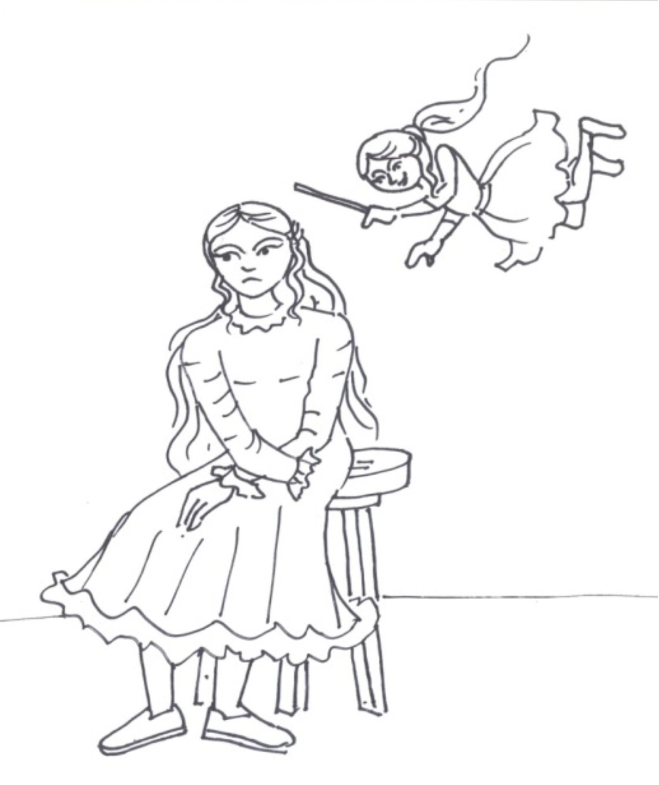
As she thanked the pixie she realised that its gloves were slowly changing colour to blue!
‘Why are your gloves changing colours? Are you my personal pixie?’ Reba inquired excitedly.
‘Please go to the ball, I’ll explain everything later once we have time.’ The pixie responded.
Reba flew straight to the ball. Everyone had partners, no one was left. Sam and Emma were partners. Reba seemed to be alone for the entire ball, but right at the moment she was relishing the thought of not being bothered for a dance, a boy with black thick rimmed glasses entered the hall, and asked Reba if he could dance with her. His name was William and looked nerdy for the ball in his casual appearance. He however had a magnificent flowing blonde hair. It looked as if he didn’t knew anything about Reba being the chosen one, or even that they are found, else he might never have asked her to dance with him. Reba could not refuse William’s offer to dance, as they were told that it was obligatory for everyone, along with the chosen ones, to have a partner in the ball.
Everyone was dancing, except Reba, Emma and Sam. They didn’t like dancing, and further William didn’t know how to dance and kept on stepping on Reba’s toes and gown.
The three were quietly sitting together enjoying seeing others when William joined them and started narrating his childhood tales and of how he once made a pie with mud in his garden. Reba, Emma and Sam preferred his boring tales than to take themselves to the dance floor.
As the clock struck twelve, Helley spoke, ‘Ladies and gentlemen, I, Helena Bilius, would like to announce that after years of hard work, we have found the chosen ones, a huge round of applause for them!’
William was surprised to hear this and excitedly repeated it to Reba, Emma and Sam. They too pretended as if they hadn’t heard anything about chosen ones earlier. ‘I knew princess Helena Bilius and guarpies will do it!’ William was boastful and over excited as he announced it to the trio.
‘Now I would like to call the chosen ones with their partners to join me on the stage.’ Helley announced.
Emma and Sam together ambled towards the stage. Reba too stood up reluctantly to go as she had to bear William for some more time. Stopping her on the way William frowned and said, ‘Where are you going? Princess Helena Bilius has called the chosen ones and not you.’ He gave extra emphasis on Helley’s name.
‘I am the chosen one and you have to follow me up to the stage.’ Reba retorted in annoyance, as she was losing her patience with William after enduring him for long with his meaningless and uninteresting gossips.
‘Oh! Really so sorry, Miss. Wait, let me make myself ready to accompany you, the chosen one.’ William all of a sudden started sounding like a sycophant.
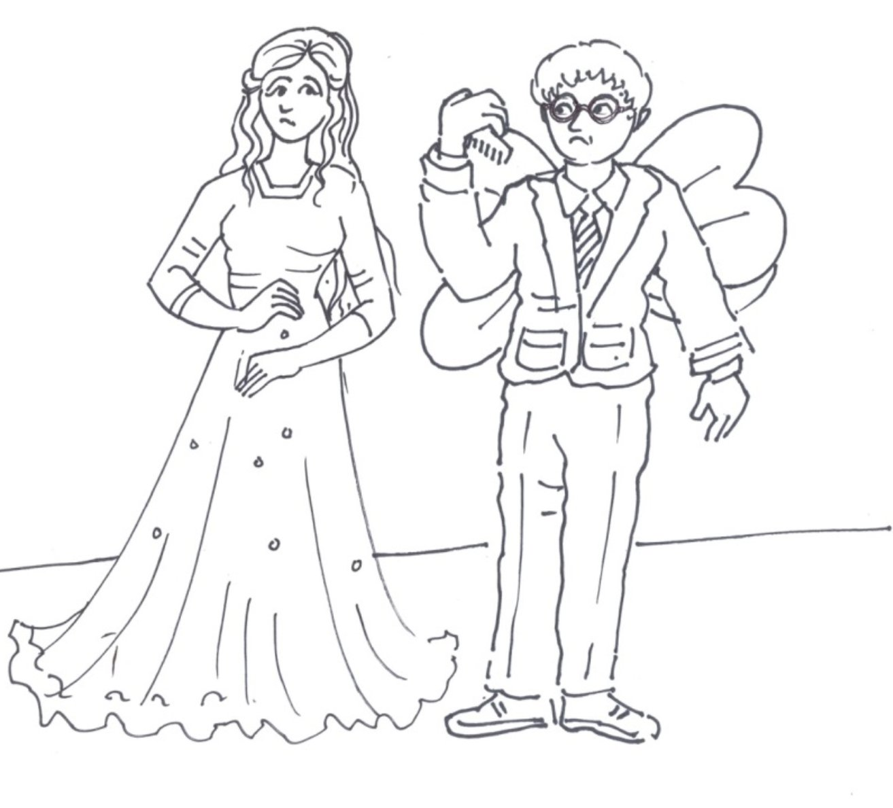
William straightened his baby butterfly wings and took out a small comb from his pocket to comb his hair. While standing he instinctively pulled down his undersized coat to make it look fit well on him.
‘Oh come on fast!’ Reba exclaimed as she proceeded towards the stage. William hurriedly joined her before they together reached the stage.
As they were moving, everybody was cheerfully applauding for them. The fairies gathered in the hall were staring William in disbelief, for being fortunate enough to get his share of glory to be partner of Reba – the chosen one. They were now correlating Reba’s reluctance to dance to special attribute she had to have as a chosen one.
‘Thank you everyone and all the best Emma, Reba and Sam.’ Helley said once the four were on the stage.
All were graceful in their presence, smiling and appreciating the fairies and the occasion, except William. He warbled, ‘Welcome princess.’ He was getting too intolerable for everyone with his idiotic acts.
After the ball Reba flew straight back to her room. She didn’t bother as to who she had to partner. Neither did she mind the unusual stares of other fairies, nor the previous thoughts and dream that bothered her. She was just too excited to talk to the pixie who helped her with hair style.
****
THE PIXIE
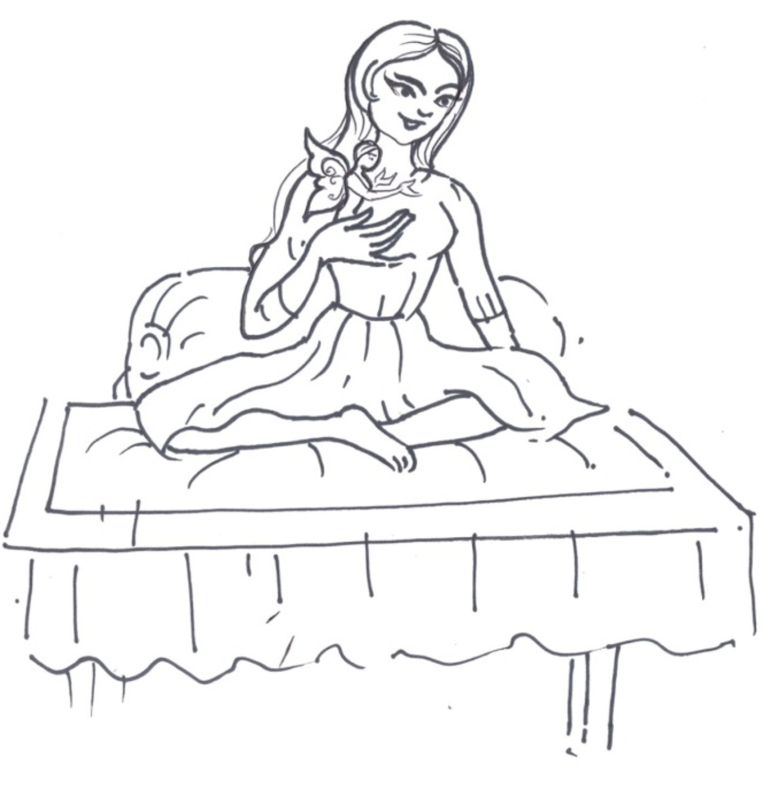
‘Hi, what is your name?’ asked Reba.
‘I am, whatever you may call me.’ The pixie had a shrill voice but extremely courteous tone. Beautiful sparkly pink wings were attached to her back. She didn’t look too grown up,, but definitely was not a kid pixie too.
‘How is Rema for you name?’ Reba asked as she was thinking about the royal portraits and Rema Roberta whose portrait she saw amongst them.
‘Pretty nice name. I am Rema from today.’
‘Well Rema,’ started Reba.
‘Yeah?’
‘Why didn’t any pixie talk to us when we met them? Although they always smiled and made us feel welcomed and pleasant all the time.’
‘Because the pixies can only talk to their owners, and because they have not spoken anything ever before, they speak in broken English.’
‘Oh, and do you know what the chosen ones do?’
‘I am so sorry, but no one ever tells us about it so we don’t know too. They think we are not reliable.’ Rema said with disappointment.
‘No problem, I think you are the most reliable person in the whole Faixieland.’ Reba said grudgingly, remembering fairies like Rowena and Helley, who hardly divulged anything despite knowing all.
‘Can you please tell me what all you know about the guarpies, and, the connection between their smiling on our arrival in Faixieland and us being considered the chosen ones?’
‘I surely could. Sometimes I visit the mirror world and see people guarding their places, think they are called sildors? I like watching them.’
‘Soldiers.’ Reba corrected.
‘In the same way guarpies too guard our Faixieland. They watch everyone who comes here and choose a few for the job given to you. Amelia was the guarpy that you first met at Faixieland entrance. She is a very good friend of mine. I had a conversation with her about your arrival. She told me that she saw extraordinary intellect in Sam, keen observing skills in Emma, and, deep thinking, quick decision making and lot of intelligence in you, which makes you all a perfect team. That is why, may be, she smiled at you all.’ Rema explained.
Before Reba could say anything Rema cautioned her, ‘You might think I haven’t told you much about the Faixieland, but even this much may be enough for a pixie to spend the rest of its life in the frison, though I may be spared as I am serving the chosen one. So please promise me that you will not tell anyone about this, except Sam and Emma.’
‘I promise that I will not tell about this to anyone but Emma and Sam. Well can you show us the Faixieland, we just know about the palace halls and Olivia’s?’
‘Sure but first you will have to introduce me to Emma and Sam.’
‘Yeah sure. Let’s go to Emma’s room first.’
They went to Emma’s room but to their surprise no one was there. The whole room was topsy-turvy, except the bed. There were books like, “DREAM: A Mystery”, “Know what your DREAM MEANS by Violet Peterson” and “Dark omens of Dreams by Peter James”.
Reba couldn’t bear the level of Emma’s superstition as it looked very weird. They then went to Sam’s room, where they found both Sam and Emma together, talking loud enough to wake the dead. The atmosphere in the room looked tense as they were talking rapidly about something that seemed to have worried them.
‘Hi everyone, what’s going on here?’ Reba asked feeling awkward for interrupting their serious conversation.
‘Did you have any nightmare?’ Emma asked without paying attention to what Reba said.
‘Yeah I indeed did, in fact I even told you about it. You remember me telling you about those sparkly things and the golden bird? But you all weren’t interested in helping or even listening. So I thought over it and have convinced myself that they won’t harm us, because if they wanted to, they could have already harmed us. Even in the dream I was walking on the street and there are no streets in the Faixieland. If you had the same dream?’
‘I think you are right, we also had same dream in which not us but you were walking down the street.’ Emma and Sam said anxiously.
‘I have a good news!’ Reba announced before they could say anything further.
‘What?’
‘I have a personal pixie, Rema!’
‘But where is she?’
‘Tada! Here she is Rema.’ Reba said taking out her hand from behind the back and revealing Rema who was sitting on it.
‘Oh! Hi Rema!’ ‘Why isn’t she replying?’ Emma asked.
‘Well pixies can talk only to their masters.’
‘Oh I did not know about that.’
‘Well I just forgot to tell you all something really important,’ Reba said and narrated them everything that Rema had told her.
‘So, we met Amelia first.’
‘Right.’
‘Let's go outside, Rema will show us the Faixieland, won’t she?’ Emma suggested.
****
FAIXIELAND TOUR
Rema was leading. The flaet looked amazing. Flaet was the path in air usually taken by fairies and pixies to move from one place to another. These were unusual paths as there was no land, instead like most other places in Faixieland it appeared like kind of pink-blue cloud network connecting different buildings and places. There was a big building, probably a post office. Unlike post offices of mirror world where one had to drop letters in letterboxes for postal people to collect at a later time, here you just had to go inside the building and put it in a bag attached to a unicorn which immediately set off to deliver it to the right person.
On the flaets there were magical lights which were visible only at night.
‘Where are we going?’ Emma asked.
‘I don’t know. I see a restaurant, let’s go there.’ Reba suggested.
They went inside the restaurant. The restaurant was too crowded with fairies. The restaurant was full and everyone had a seat for themselves and enjoying their food. To their astonishment they found as more fairies entered the restaurant, seats appeared on their own without having to make them wait. Everything in Faixieland suggested that it was a mystical world where nobody had to encounter inconvenience. They were about to take their seats on the table when they heard a shriek.
‘Hey, Emma!’ Emily was calling them on spotting them in the huge crowd.
‘Hi!’ Emma responded.
‘You shouldn't have come here all alone.’ Emily said.
‘We are not alone, Rema is with us.’ Emma said, this time more confidently
‘Who is Rema?’ Emily asked sceptically with a frown.
‘Just my personal pixie.’ Reba said interrupting their conversation.
Emily gave an intense scrutinising look at Rema and asked, ‘Did she talk to you?’
‘No! Not yet. I don’t know why.’ Reba said trying to sound normal.
‘Okay enjoy yourselves.’ Said Emily.
They took their comfortable seats as Emily left. There were less stares on them with fairies now feeling comfortable getting used to their presence.
Emma asked Reba, ‘Why did you lie? You said to us pixies can talk to their owners.’
‘It wasn’t normal for a fairy to ask whether anyone’s pixie talk to them, I was a little over conscious not to reveal that Rema told me about the chosen ones.’ Reba whispered.
‘Excuse me; what would you like to have?’ All of a sudden a fairy dressed like a waiter appeared right in front of them. They were all startled and left speechless momentarily due to his sudden appearance.
Sam was first to reply, ‘Umm... a cup of coffee.’
‘Thank you sir, and what should I bring for you two?’
‘Same order for both of us.’ Reba said.
The waiter scribbled something in the notebook and coffee appeared for all of them instantaneously on their table.
‘Th... thanks.’
‘I don’t understand anything happening here. I don’t even know whether we should stay here or run away? But run away? Where? I am utterly bewildered and have begun to dislike everything in this place. We weren’t allowed to do anything in Jenny’s surveillance, and now, when we thought we could do whatever we want to, we are stuck here, amongst the fairies and expected to help them. We don’t even know what they want of us.’ Emma said exasperatedly, as the waiter turned out of sight.
No one spoke anything for some time engrossed in savouring their coffee until Rema whispered something to Reba. Immediately Reba asked everyone to cheer up as Rema had offered to take care of all their worries and doubts. Reba was having the feeling that her friends were unnecessarily doubting and getting worried and thus spoiling their chances to enjoy this lovely fairy place.
‘I agree with you.’ Sam took a deep breath and said trying to appear cheerful to Reba.
‘Me too.’ Emma too tried to present a bold and cheerful self to Reba.
By the time they had finished their coffee they appeared more relaxed, and, resolved to start enjoying small beauties and mysteries around them with no imminent danger from anything here. They were smiling and laughing, more than before, and it looked as if some of Rema’s confidence had rubbed on them.
They came out of the restaurant and proceeded towards accessories and dresses shop ‘GOOSEBUY-SHOESBUY’. The presence of Rema had surely added to their confidence. Rema was successful in getting their confidence for herself and Faixieland.
‘Are we going in that goose-shoes buy thing?’ Sam asked.
‘Yeah.’ Reba said.
They went inside the big building of the shop and found themselves in a huge place with no floors. The dresses appeared hovering in the air. Small airborne boxes with wands too were floating in the air. They didn’t buy anything, but became familiar with all the nooks and corners of the store, and its merchandise. Rema found a wand she wanted. Reba paid for her, with the little fairy money given to them by Helley for spending and buy things during their stay in Faixieland.
From there they went to a place which probably was a small indoor stadium. It was hosting a fairy dancing competition in a big hall with no floor, and, a few chairs suspended in the air towards one side. There was a big stage in the centre around which fairies were flying while some other fairies were sitting on the chairs. Reba and her friends saw the fairy dancers coming one after the other in groups and perform in front of flying fairy audience.
‘Wow this is just epic!’ Sam said pointing towards a fairy, who all of a sudden disappeared and came back flying through the window of the hall. Sam almost fell off the chair he was sitting on, as a fairy whizzed past, swirling very close to him.
The concluding event was something very amazing with fairies performing acrobatic dance based funny skit.
‘Oh! See the dancer in the middle. He forgot his step.’ Emma laughed pointing to one dancer on the stage.
‘See now he is laughing and inventing his own steps.’ Reba pointed out and giggled.
‘But it seems as if he even practiced these steps a lot.’ Sam said wisely.
All enjoyed the dance, because, unlike other acts it was laced with humour. Everybody was really satisfied with the results when it was announced as the last group won the first place. Their performance was really different from others with mesmerizing dance steps and sequence.
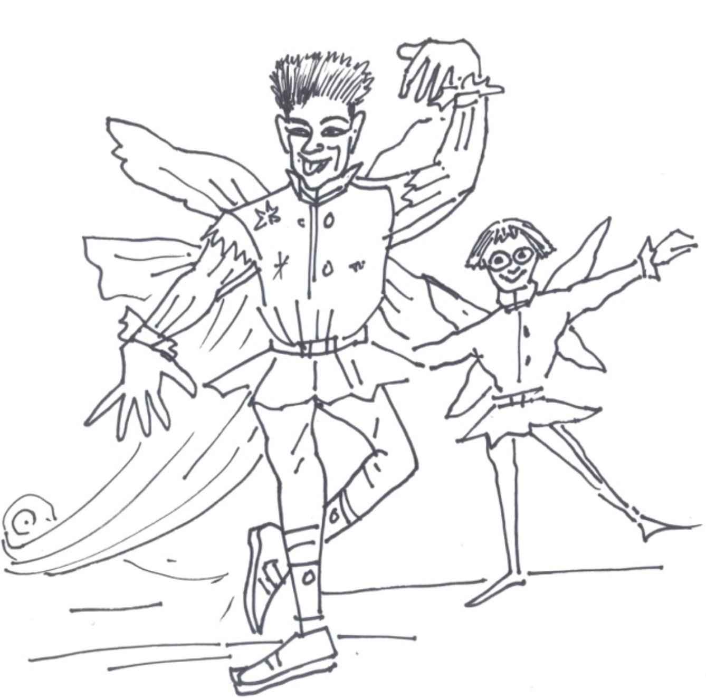
As Reba, Rema, Emma and Sam came out of the hall, Sam said, ‘Let’s go back to the palace as it is too late, and, I am starving too.’
‘I enjoyed a lot today.’ Emma said.
‘I too enjoyed myself.’ Reba added.
They all flew back to the palace, refreshed themselves and went off to dine with the courtiers and Helley.
CHOSEN ONE MYSTERY
At the table, Helley was sitting in a very serious mood surrounded by the nervous pixies and courtiers. The look on Helley’s face suggested Reba, Emma, Sam and Rema might have transgressed the limits on their movement. They guessed Helley might have been displeased as might be they were not supposed to move around in the Faixieland without any fairy accompanying them. The words of Emily, at the restaurant, expressing surprise on seeing them roaming alone immediately resounded haunting them. They feared that they may be punished for the same. Emma however, pulled up her courage to ask, ‘Is something wrong Helley? You look disturbed.’
‘Sit you must be hungry, I’ll talk to you once you have had your dinner.’ Helley replied in her typical very polite and humble tone.
Once everyone had finished their dinner, Helley broke the silence sounding serious, ‘It is high time I tell you about something which you must know. I know about all your anxiousness to know more about the chosen ones, even about you Rema.’ To ease them up a little, she looked at Rema with a gentle smile and declared, ‘Today I will reveal all the mysteries.’ She took a long pause, waiting for others to say something. As nobody spoke she continued, ‘It started years ago when the Faixieland was ruled by beautiful Madam Robert Roberta. There is another place, Merryland, which was formed after a tragic incident. It was a part of the Faixieland earlier. There was a king from the mirror world who suggested partition of the Faixieland into two halves to make it easy to rule. After the partition he was made king of the other part by, the Faixieland queen, Madam Robert Roberta. Even though he was the king, his authority was limited and subject to periodical interventions by the queen. He started liking her and wished she could agree to marry him. However Madam Roberta was later married Sir Nicholas as she never came to know of the King’s liking for her. King Numpone was deeply saddened, and, wanted to completely break free from the queen’s influence. He raised his own army without letting Madam Roberta to have any inkling of it, and later declared himself and his administered part independent of Faixieland naming it Merryland. He gradually developed deep dislike for Madam Roberta and her subjects in Faixieland, and, periodically attacked Faixieland so as to get control over Madam Roberta. Many pixies and fairies lost their lives during these attacks and the ensuing wars. As time progressed the King and Madam Roberta died but the hostility between Faixieland and Merryland fairies never ceased. As the situation worsened, leading to more loss of lives on both sides, the fairies went to an astrologer to find some solution. Even before anybody could tell anything, the astrologer asked for some pixies to be deputed with him to enable him find the solution for which they had come. The pixies were brought before him and he cast a spell on them, and said, “These are guarpies they will guard the Faixieland. The positioning of stars and my ancient studies reveal that, three foreigners will come to save the fairies. Each will have different skills. I will inform you when they come. But if unfortunately not me, then these guarpies will smile, signalling the foreigners’ arrival.” Now you know everything, what are chosen ones and why were we so happy. Will you help us?’
‘We will indeed help you all.’ Reba said.
‘We will that’s for sure.’ Added Sam.
‘Yeah indeed, but I have a question, how are we going to enter the Merryland?’ Emma asked.
‘That ees seemple, we will drop you there!’ All the pixies shouted together.
‘You all can speak to us?’ Reba asked.
‘Ah! Just forgot, the astrologer also predicted that until the time when the chosen ones agree to help the fairies, the pixies will not speak to anyone except their masters.’ Helley said looking towards the pixies.
‘How are we going to carry our stuff there?’ Reba questioned.
‘I will give you a bag, in which you all will be able to keep all your belongings. It will have lots of space in it.’ Helley informed.
‘Are there any kind of books on Merryland?’ Sam asked.
‘Well we have a library you could go and see if any books are there. Or else if anyone wants to come with me to the museum they can. You could learn many things even in the museum. The pixies will show you the library.’
‘Okay thanks.’ Sam said.
Sam and Reba decided to go to the library, whilst Emma went with Helley to the museum.
The pixies accompanied them to the library. It was between the ground floor and the basement.
They passed Emma’s room, took a left then a right, and reached a deserted corridor. There they heard a feeble voice asking, ‘When it all started’. Reba and Sam looked around but could not spot anybody. One of the pixies immediately answered ‘first of November’. This was birthday of Helley’s relative, and coincidentally, Reba’s birthday too. Immediately with the answer the wall in front cracked, revealing a steep spiral staircase. The pixies satisfied Raba and Sam’s curiosity by informing them that this system of password entry was developed only after a witch known as Camorte stole flaxiweeler, a very important and rare ingredient for potions.
They climbed down the staircase and reached the huge library. It had many shelves, as high as twelve feet, loaded with books. The theme and the type of books in each shelf were displayed in bold gold emblazoned letters on a wooden plank attached to the shelf.
The books in the ‘Magic for Beginners’ section had magical powers in them. Whenever anybody touched them they started telling about the chapters and how to perform the magic described in them. At the far end of the library there were two long tables, for people to study on, whilst for the librarian there was a small table in the corner of the library.
Mr Bookinu the librarian was a short old bald man. He was mostly snoring during his duty time. He had a wide smile with a button nose and large cold eyeballs. As was his usual practice, he welcomed Reba and Sam to the library. As a librarian he only had to usher in visitors inside and guide them on how to use the library. He showed Reba and Sam their way in and soon started sawing logs on his table.
Both Reba and Sam started looking for books on Merryland and Faixieland history.
‘Hey Sam did you find anything?’
‘No, and you?’
‘Not me either.’
After sometime Reba exclaimed, ‘Sam here’s the shelf for books on Merryland.’
There were many books on that shelf. They took a few titled, ‘How to Get into Merryland’, ‘THE FAIRIES WHICH WILL LIVE FOREVER IN MERRYLAND’, ‘Behaviour of MERRIES towards the FAIXIELAND FAIRIES’, and ‘Servants Of King Numpone’.
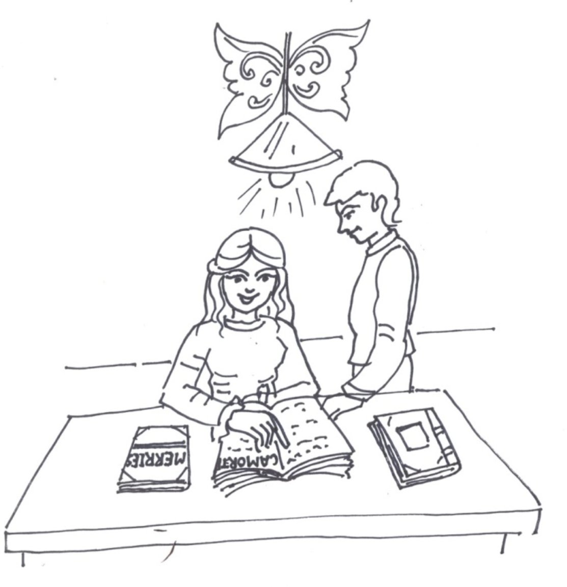
‘Reba, see in this book the fairy has written there are some riddles we have to solve to get into Merryland. It says that the fairies who returned from Merryland have stated that there are nearly ten riddles to get into the Merryland.’ As soon as Sam finished, Reba called, ‘Sam come here.’
He went towards Reba as she pointed towards the three books she was having and she said, ‘See Sam, in these books, “the servants of king Numpone”, “fairies living forever” and “the behaviour of Merries”, I see one name that is common, Camorte.
This one tells that she is alive now. She was the king's most respected courtier, and this one tells that she murdered seven Faixieland fairies, all in just one spell. She is believed to be the most powerful witch. She is hiding somewhere in the Merryland. I don’t know why, but I suspect her. Maybe she gave him a kind of elixir of love, and that is why she stole the flaxiweeler as it is a very important ingredient for the potion, see it is written in this book,’ She said pointing towards another book titled “Extreme Elixirs and their uses by K M Paulus”, ‘also it’s written that extra dose of it can cause disorders, and, increases stress and anger. Maybe she gave extra dose to the King Numpone with a strand of Madam Roberta’s hair because she was to be the target of his hate. The dose made him hate Madam Roberta, thereby leading to the destruction of their kingdoms. Camorte must have thought to rule the Merryland after King Numpone’s death.’
‘Brilliant! In the book which I was reading, it is mentioned that Camorte killed many Faixieland fairies while they tried to kill her to get inside the Merryland, she used to first guard the entrance. It says she is hiding somewhere far away from the entrance.’
‘I think you all should hurry up.’ Rema had just woken up from her short nap she took on the librarian’s table.
‘Yeah, we are trying.’ Reba replied.
They didn’t realise how fast time passed in the library, as it was almost time for Emma to return.
As soon as Emma joined them in library Sam inquired if she saw anything interesting in the museum.
‘A big thing. I saw a witch’s statue who was the king’s servant; she was really brutal towards the Faixieland fairies. I suspect her because of her acts. I don’t remember her name very nicely but it started with a ‘C’. Something like Canotem.’
‘We too suspect her. Her name is Camorte not Canotem, by the way.’ Sam said.
Immediately Emma exclaimed, ‘Oh yeah! Camorte.”
‘We should think of a plan to get into the Merryland, as soon as we can, as she is hiding there for ages. And for that we need time to work ourselves up, as there are up to ten riddles to solve to get entry into Merryland. Rest of the things we can plan in Merryland itself.’ Reba suggested. The rest agreed and set off to learn more about Merryland through books.
When Reba and Rema were in their room she immediately started reading the books Reba borrowed from Mr Bookinu. On the other hand Emma and Sam too in their rooms started exploring about Merryland through a few books they got from the library. They also had one book that Rema specifically suggested for them in the library.
After a while Sam and Emma went to meet Reba and Rema in their room. They asked whether it would be wise to do a combined practice of all they have learnt to make light of their tedious task, and also, to get the real feel of entering the Merryland.
Reba supported them as it seemed a very practical approach.
Instantly Rema flicked her wand and a big black smoky hole with a little glitter appeared in the air.
Reba, Sam and Emma stepped inside it and found themselves in a big room, with no walls visible because of haze and smoke. Rema didn’t enter the room. Suddenly one grey deer, from amongst a herd of seven to eight others, appeared in the room out of nowhere. Emma unexpectedly found a hoop appearing in her hand. Sam asked her to recognise the deer that looked different from the others and hoop it. Emma went forward and voila! She hooped the correct deer. All the deer started to disappear and it got pitch dark.
After a while, as the haze and smoke cleared, two doors appeared on two opposite sides of the room. Reba peeked in both of them. In one room she could sense some food and medicines kept there, before a long flash dazzled her eyes. She quickly closed the door and opened the next one. Here, she could see nothing, as it was dark, but smelled some food and medicines here too. As she closed the door she saw Emma had fainted. She quickly dragged her inside the second door with dark room. When they were inside Sam asked how they will see what is happening. Reba smiled, and a few moments later, her wings started glowing as they were glow-in-the-dark. Soon they could bring Emma back to senses using the medicines, and also gave her some food.
Slowly and steadily they progressed further and at last the phantasmagorical walls started to disappear and they came back to Reba’s room. Rema congratulated all for solving all the riddles. She reminded them that they shall encounter and solve up to ten different riddles to enter the Merryland.
Tired but content on having been successful in solving their practice riddle, all of them immediately fell into deep slumber on Reba’s bed.
****
JOURNEY TO THE MERRYLAND
The next day was really hectic as they had to pack for the Merryland in the magical bag Helley gave them and also they also had to bid farewell to all their fairy friends and visit Olivia to request her to make their wings move faster.
‘Reba Emma, I am going downstairs.’ Sam said as he left the room.
After a while he returned and said, ‘Helley and the courtiers are asking all of us to go down to meet them.’
They all went downstairs where all the courtiers including Helley and the pixies were waiting. The pixies, courtiers and Helley, all seemed to be very pleased to see the chosen ones headed for their mission in the Merryland.
‘Happy journey!’ they all shouted together in unison with happiness and joy.
‘These pixies will drop you near the entrance of Merryland. Then you four will have to continue the rest of the journey alone. Okay?’ Helley said while pointing towards a few pixies standing towards her right side.
‘Four? So it means that we can take Rema along with us.’ Sam asked excitedly.
‘Yeah of course.’
After that there were no more conversations. It was not a very serious silence. It was like everyone could still talk to each other through their eyes. As one person looked towards the other they exchanged meaningful smiles and gestures.
Sam, Emma, Rema and Reba came back to their rooms and to while away their time waiting for their departure, they sat on a divan playing fairy chess. Rowena was with them helping, as they were not familiar with the rules for fairy chess.
The rules were simple; they could play with as many players as they want. There were five wooden guarpies, two magical creatures and one queen. The players had to say whatever they wanted in mind, and the wooden pieces move on their own. The pieces were never out of the game. Rather the players took control over the opponent’s pieces, instead of moving them out of play by considering them dead. The winner had to take over the whole board and the opponent’s pieces to mark his victory and if they had to call off the game midway at a particular time the player with maximum pieces was declared winner.
Reba, Emma and Sam played for a long time as they wanted to tide over their anxiety waiting for their departure to be announced by Helley. After an hour or two maybe, Helley spoke, ‘It’s time to leave, now.’
As Sam, Reba, Emma and Rema proceeded towards the Merryland entrance, the pixies followed them. After sometime Sam asked the pixies, ‘Why can’t you come with us?’
The eldest and the oldest one replied, ‘Wee ain’ allowe’ there. Rema eez ‘cause she is the personal pixeee of one of the chose’ onesss. An’ we’re proud of herr, ‘cause shee eez youngest pixeee to beee the personal pixie.’
After sometime the pixie spoke again, ‘Thees eez the Merryland entrans, go forwaard eet eez eenvisible.’
Rema sat on Reba’s shoulder as they went forward. Everything started blurring and it became absolutely dark. All of a sudden they saw five sheep and three lambs. In the beginning they could not understand what they had to do, until Reba asked Emma to touch the odd looking sheep or lamb. Emma thought for a while and touched a white lamb. But oh! It was not the correct answer. Everything started to rotate in a whirl and it seemed as if before even their journey had started they will have to quit, not only journey to Merryland, but also, the journey of their life! Their worst nightmares appeared coming true. They thought they might lose their lives today.
Boom! All of a sudden they found themselves floating in the air, drawn by strong air currents as if in tornados and cyclones. Once again the sheep and lambs appeared but this time giving the foursome, more anxiety and stress. This time Emma had to be right else she would risk everyone’s life. No one could see anything clearly as it was such a powerful hypnotizing effect that blinded everyone, including Rema. They were not in control of themselves, but somehow Sam and Reba managed to keep themselves as well as Rema and Emma conscious.
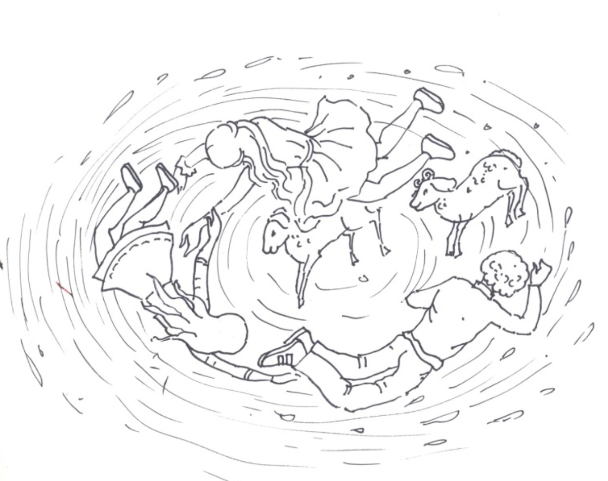
‘Reba... Sam..... touch the one... my righ’’ saying this Emma fainted. And after a few seconds Rema also collapsed.
Reba was quick to stuff her inside the magical bag, and along with Sam dragged Emma holding her hands. As they touched a lamb, with white fur and a scratch on its hoof, the hypnotizing effect stopped, and they landed on the floor of a smoky room.
‘Yay! Sam see they are conscious again! Reba exclaimed pointing towards Rema and Emma.
‘Are you alright?’ Sam asked them.
‘Yeah we are.’ Emma and Rema exclaimed as they regained their senses.
‘We did it Emma! Both of us together, me and Reba.’
‘Really! I am so glad.’ Emma told Sam in congratulatory tone.
‘Excuse me, the next riddle.’ Interrupted Rema.
Suddenly they saw themselves surrounded by black cloud of smoke. All but Reba tightly clasped each other’s hand and coalesced to form a single lady. Reba couldn’t believe her eyes at this transformation. She felt concerned seeing her friends disappear right in front of her eyes.
The ones transformed had lost their spiritual existence and, their physical body existed merged with each other. Some invisible force was guiding their action and movements.
The lady they had transformed into, looked feeble and sad. She split into four parts, one forming Reba, one Emma, one Rema and the last one transformed into Sam. The four walked in the middle of the room and melted like a hot wax candle. The wax again shaped the lady who now looked a lot fitter and healthier.
Reba was astonished to see her duplicate melting with her friends and then reforming the lady. As Reba was looking astonished at the quickly unfolding mystical events, the lady again melted making a big puddle of wax.
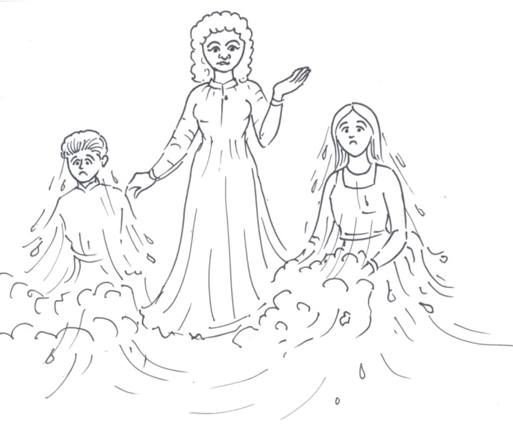
The practice of the riddles in Faixieland had by this time trained Reba enough to not lose her calm and composure. Thinking for a little while, about the riddle, she tore a part of her dress and wrapped it around her finger. She kneeled down near the big puddle of wax and wrote Camorte on the floor with the wax.
It indeed was hurting her but for heaven’s sake she wanted her friends back, and also, help her new friends back in Faixieland.
Crack! Another riddle was solved as she wrote the last ‘e’ of Camorte. Emma, Sam and Rema remerged from the black cloud.
‘What was the riddle, what happened?’ Sam asked as he appeared from behind the dark clouds.
‘All of you had turned into a lady, whose face I thought looked like Camorte. She split into four pieces, each forming one of us who at last melted and formed Camorte. She looked more powerful this time. Maybe that part of the riddle suggested that as she finished us and took new birth she used our energies to regain her strength and vitality.’ Reba explained.
‘What did you do?’ Sam asked.
‘I wrote Camorte with the melted wax.’
‘Very well.’ Rema, Sam and Emma said together.
As they were talking, Sam’s hand suddenly rose, and, plucked a half-folded arm length paper, out of nowhere. He opened it but it was blank. Instead, a shrieky old voice echoed from the paper greeting them all and announcing,
‘You will never know how powerful I am,
In you Sam.
Ones who found me,
No one knows who they used to be.
Find me if you can.’
‘I probably know the answer. You will never know how powerful intelligence is. Rema you said Amelia saw intelligence in me, so it all matches.’
‘And what about the last line?’ Emma asked Sam.
‘Maybe, guarpies found intelligence in you and now there are no more guarpies. So no one knows who they used to be, I mean the new generation, probably wouldn’t know about it.’ Reba replied.
‘But how and where to write?’ Emma asked as they all started looking for a quill and ink.
Sam carved an impression on the paper, trying to inscribe the word intelligence with his nails. But no need for inscribing the word, as he started to trace ‘I’ it appeared in magical ink. To everyone’s astonishment as his finger moved smoothly on paper, the word intelligence appeared on the paper in beautiful ink.
Suddenly they found themselves flying in air with two fairies right in front of them.
‘Who are you?’ one of the fairies asked.
THE MERRYLAND
‘We are from the Faixieland.’ Sam replied.
‘Who are you?’ Emma asked.
‘I am Maple and she is Luna.’ Maple a tall fairy with black hair and eyes replied.
‘Are you a fairy?’ Sam asked.
‘How dare you! We are merries!’ Luna shouted.
‘Sorry, aren’t we in Merryland then?’ Sam said.
‘No problem, yes you are in Merryland. You are the chosen ones?’ Maple asked.
‘Yes, do you, the merries, also know that?’ Reba asked.
‘Of course we do, in fact I and Luna are the great-grandchildren of the astrologer you must have heard of. Who predicted your arrival.’
‘Oh, yeah we have.’ Reba said in a voice that didn’t sound like hers.
‘Let’s take them to the princess.’ Luna said a little curtly.
The merries had everything similar between them and the fairies. Still they took it to their hearts whenever anyone referred to them as fairies.
Luna was tall and slim merry with two tight blonde braids. Though, she detested the mention of fairies in public, but, in private she understood that she belonged to the same breed of fairies, and, acknowledged her kinship with them . She knew the war was started from their side of the fairy world, the Merryland, and so had sympathy for fairies of Faixieland seeing them as sufferer for aggression started by King.
The two merries, Luna and Maple, took the foursome to their ornate well adorned palace with beautiful diamond hangings, crystal tables, and a diamond chess board placed near the entrance.
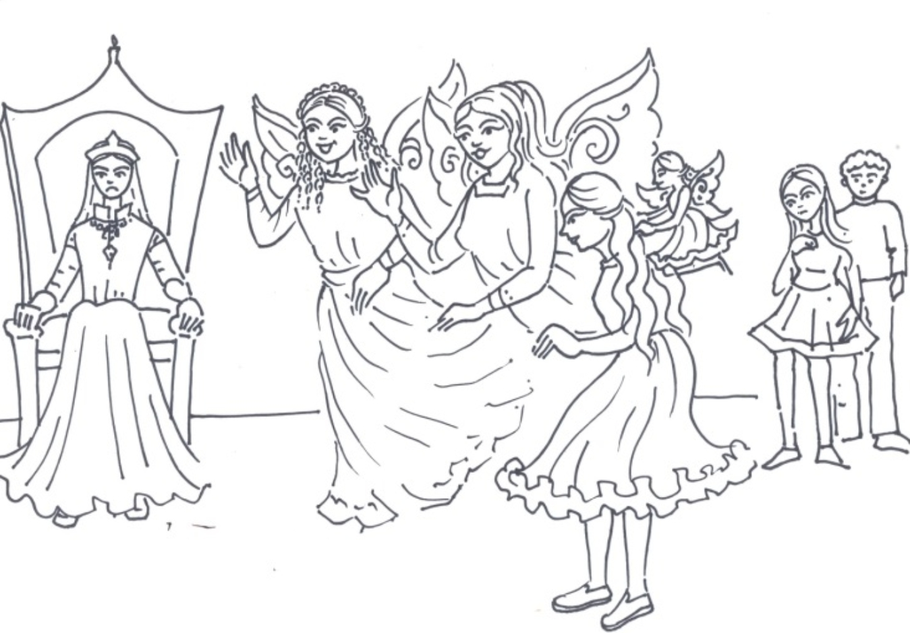
The palace resembled Faixieland a lot, except for the hangings. There were hangings in Faixieland too, but they were made of a rare material of the fairy world. The material of Faixieland was more antique than diamonds, but obviously these hangings looked far more exquisite than those.
In the middle there was a beautiful throne decorated with diamonds on which the princess was sitting. The merries genuflected in front of their princess and said, ‘Your majesty these are the chosen ones from Faixieland, we found them near the entrance.’
‘What are your names dear?’ The princess asked Emma, Reba and Sam.
‘I am Emma, he is Sam and she is Reba.’
The princess continued, ‘Nice to meet you all, I am Lavender, Maple and Luna will show you your rooms.’
As they flew through the hallways, Reba thought she read her name somewhere but when she looked back, she could see nothing but photo frames with the queens and kings of Merryland, and, history of Madam Roberta and her granddaughter Queen Rema Roberta.
After sometime Maple said, ‘Reba, as you are new here, I, will be your guide. Emma you stick on with Luna and Sam,’ she said turning towards Sam, ‘You will be with Simon.’
‘Right, but who is Simon?’
‘Simon!’ Maple shouted to a fairy standing nearby. He looked about thirty and had brown hair. He was standing in front of a cabinet, swaying a flower pot in his hands and singing to it a lullaby.
‘Oh yeah! Sam, right?’ Simon flew towards Sam and said, ‘Come with me.’
They all flew from corridor to corridor until they reached four rooms located next to each other. Sam went into the second one, followed by Simon. Emma went in the last one and Reba in the third one.
‘What is the use of the room next to Sam’s?’ Reba asked Maple.
‘It is used for entertainment.’ She replied.
‘What are xhinos? I heard their name while coming here in the palace.’
‘Xhinos are normal pixies but after the Mexie-war they were named ‘xhinos’. I have one too, think she is asleep.’ Maple explained.
‘Okay. Where is your room by the way?’ Reba asked when Maple was going out of the room.
‘My room is on the ground floor, next to the dining hall.’ Saying this she immediately left the room.
The room was beautiful, with a big bed for Reba and a small one for Rema. In the corner there was a big wardrobe in which Reba and Rema's dresses were already arranged. It had a large window with beautiful white curtains, and, a lantern placed beside the big bed.
They shut their eyes and were deep asleep as soon as they fell on the beds.
The next day the foursome woke up early and met in Emma’s room. They discussed and correlated their experiences at Merryland, and also, about their guides here.
They were all enjoying their time when Reba noticed that Rema was hiding something from her, as she didn’t seem to enjoy their company.
‘Is something bothering you Rema?’ She asked her.
‘I knew everything.’ Rema said disheartened.
‘You knew what?’ Reba asked with a grimace.
‘I knew the answers to all the questions.’
‘What kind of questions?’ Reba was getting impatient.
‘The ones we had to solve to enter the Merryland.’
‘Why didn’t you tell us the answers then. We could have been better placed to face these perilous situations?’ Sam asked sceptically.
‘It wasn’t me who was with you! In fact no one was with you at all. It was only an illusion.’ Rema explained nervously.
‘What?’ Reba almost screamed.
‘All the pixies know everything but they aren’t allowed to help their masters and mistresses.’ Rema whimpered.
‘Oh! Don’t be guilty.’ Emma said, frowning at Sam and Reba, and caressing Rema to give her comfort and consolation and help her overcome her guilt.
‘Sorry.’ Sam apologised.
‘Forget about everything Rema; let’s go to the entertainment room.’ Though Reba solaced Rema but actually she kept wondering how the pixies know everything. However, she didn’t bother to ask Rema as she thought that right now Rema was not in the right frame of mind to answer it.
They went to the entertainment room, and saw Maple and a pixie talking to each other. When they saw them Maple said, ‘Hi, Moony wanted to meet you, she thought you all must be twenty or twenty two years old.’ Maple said as everyone smiled.
The entertainment room could display all types of feelings; it depended on the person, what he or she wanted to be. As the invisible walls could change colours depending on feelings of those present, in the room everyone saw a different coloured walls at the same time.
As right now Reba was really tense, she saw dark purple walls. But after a few moments it changed into sky blue and then again into dark purple. She asked Maple why the colour of the walls was changing. In reply maple said, ‘The colour that you saw at the first represents your feeling right now, as bright it will be, as happy you are , as pale it will be, as nervous you are, as dark it will get as tense you are. The second colour is what you have to be. Gradually the walls will become lighter along with changes in your mood.’
‘Oh, I see.’
After sometime Reba saw a bright orange colour. There was a mystical power, no doubt, that made them feel better every second. They forgot all their conflicts and stress and everyone felt really nice after being in the entertainment room just for fifteen minutes. They didn’t want to leave but Maple insisted them to have their breakfast first.
They went to the dining hall and waited till everyone else was seated. A tall male fairy, who looked about twenty-two years old sung, ‘Cook Peter, cooks things you see in books, just think what Peter has to cook.’
Reba thought of a boiled egg, toast and some orange juice. Suddenly everyone noticed a male xhino who looked just like his master, the Cook Peter, on whose shoulder he was sitting. The xhino was waving his wand in the air and some ingredients such as bread, egg and juice appeared on a table. The table was created by the xhino just a moment ago. The xhino flicked his wand again and magical power entered the Cook Peter. His hands now worked faster than a fly. In a few seconds Peter flew up to Reba and gave her, her breakfast.
It took some time for all of them to finish their breakfast as Lavender spoke, ‘Did you all sleep nicely? Were the beds soft and warm enough for you all?’
Reba answered, ‘Oh, yeah they were.’
‘Good, good! Maple and Moony will give you a tour of Merryland, okay? It might help you roll out your plans and activities.’
They went to Maple’s room accompanied by her and saw her xhino Moony.
‘Hi everyone! I am Moony, and, you all are the chosen ones I suppose.’
‘Hi! Yes we are, pleasure to meet you.’ Emma replied. She was still too excited talking to new fairies and pixies.
‘Lavender ordered to take them for tour.’ Maple said
‘Let’s go!’
They flew with all their strength. There were many shops, with small and large chocolates, some as big as the size of a grown-up male fairy.
‘Let’s go to that shop.’ Maple said pointing towards a large shop named ‘THE LAMICHOCONGLATE’.
‘Do you know that this is the only sweet shop where mirror world dishes are made. The most popular is the lamington, that’s why its name is lamichoconglate, lami and ng makes it laming and the rest is choco and late that is chocolate.’ Moony informed them once they the entrance of the shop.
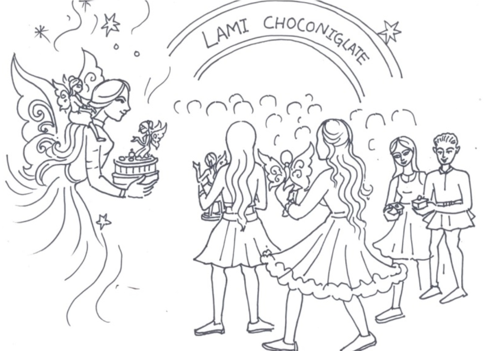
They went inside it and entered a huge hall. The rush of merries to purchase their chocolates was an enjoyable sight. They bought two lamingtons for Emma and Sam, one small and one big chocolate model that looked exactly like Reba and Rema, and one Tomosmilla, a large chocolate cake with beautiful chocolate wings, rainbow sprinkles, and many other tiny chocolate models of different flavours available in the lamichoconglate. They took the model with them as they couldn’t finish eating it; they kept it in the bag Helley gave them back in the Faixieland.
After the sweet shop they went to the great common museum for Merryland and Faixieland. It was at the far end of Merryland. It wasn’t actually a part of either Merryland or Faixieland but was visited by fairies of both places. Its ceiling was dome shaped and was painted in white and brown.
‘It looks pretty ancient.’ Emma exclaimed at its entrance.
Its inside was even bigger with models of kings and their belongings.
‘Camorte!’ Emma had sighted Camorte in a few places and at the moment was pointing at a statue right in the middle of the museum. Camorte was standing with all the other courtiers who were not alive but dead!
Emma, Reba, Rema, Sam, Maple and Moony went towards the statue, and tried to read an encryption written at the bottom of the statue carved on a piece of wood. That made it tougher to read.
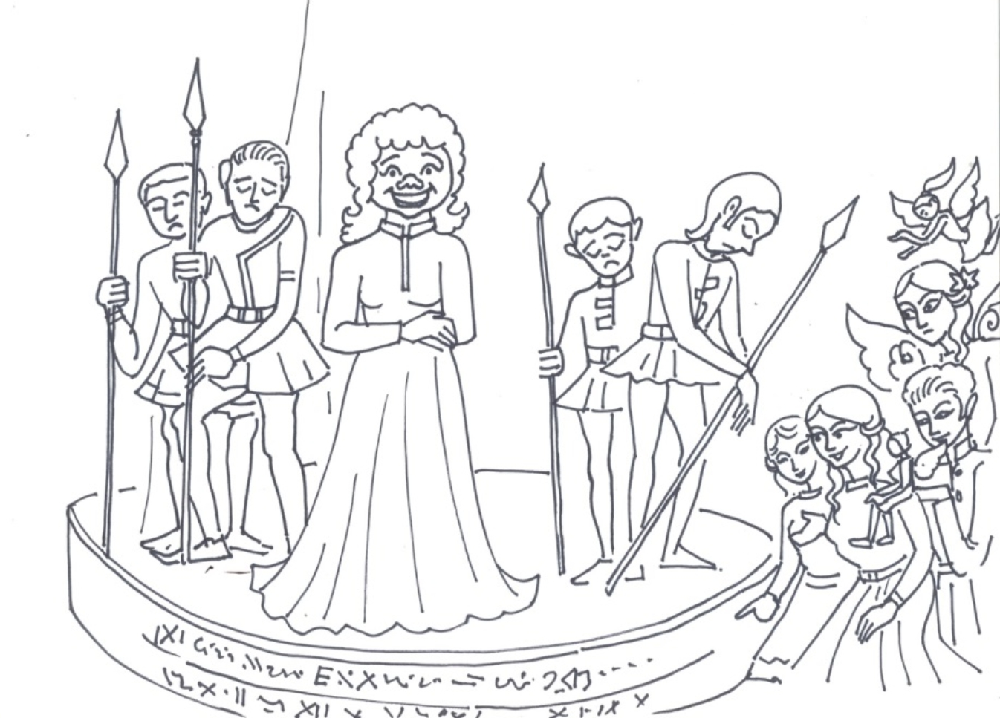
“Camorte and the other courtiers were waiting for the statue, King Numpone had promised to give them, after they were successful in their aggressive attacks against Faixieland. Camorte killed all the eleven courtiers with one flick of her finger, and told the sculptor to continue making a model of them.” Sam read aloud.
‘Camorte was such a cruel woman.’ Emma remarked.
‘Indeed she was.’ Moony agreed.
After silently observing things Maple spoke, ‘It’s too late let’s go back to the palace.’
It was evening, and, they had been out since the morning. They rushed back to the castle; it took them one and a half hour to reach back. As they entered inside the palace, Maple spoke, ‘I’ll give you a tour of the Merryland palace, come with me.’ They changed their direction and flew towards the back portion of the palace.
There they saw a big clock, as big as three baby elephants. It was round in shape and had only one hand. ‘It is the Mapier’s clock. It shows you whether enemies are nearby or not. It also has a secret function which no one knows, not even the pixies or xhinos.’ Moony said.
After that they went inside the palace. Maple showed them the royal photo frames. The first one was that of King Numpone, beside it was a queen named ‘Becky’ and another king named ‘Ben’ on the other side. The last one was ‘Lavender’.
‘I am starving; let’s go to the dining hall.’ Moony said in exasperation.
They finished off their dinner and went to sleep earlier than usual.
****
PULLERY
The next day they all woke up really early, fresh and joyful. Though there was something lurking in Reba’s mind. She was pondering, if they continue to enjoy Merryland when will they finish off Camorte? How much damage would she have done till that time to other people. Now they definitely can’t sit idle. She immediately woke up Rema, and told her, about her thoughts.
‘You are right. Let’s not waste time.’ Rema supported Reba’s thoughts and feelings. ‘Let’s ask Sam and Emma, if they have got any idea, of how to proceed further.’
‘Let’s go.’
They went to Emma’s room and told her to come along to Sam’s room. Certainly Emma had sensed urgency in Reba and Rema’s tone, and accompanied them hurriedly to Sam’s room.
‘We could kill her when she is asleep.’ Sam suggested in a really casual manner, when they explained their purpose of coming to his room so early in the morning.
‘No we can’t she isn’t that fool to sleep without any protection.’ Reba objected.
‘I think you are right, first we need to know where she is right now.’ Emma said in a know-it-all manner.
‘I might know where we can find her.’ Sam said.
‘Where?’ Reba exclaimed excitedly, as everyone fixed their gaze on Sam unbelievingly.
‘I don’t know exactly, but we could just guess it a bit. Maybe we can find some evidence in the library or maybe we have to ask people, what she had been what she used to do, and things like that.’ Sam said a little embarrassed by the stares and expressions suggesting belief in forced expectation.
‘Okay, so Emma and I are going to ask people about that. In the meantime Rema and you can search the library. I hope we can meet each other around lunch time to link our findings.’
‘We will try to complete our work as fast as possible, and then we will start searching for the books on Camorte. It shall be a tough task, searching for relevant books and literature about a witch like her.’
‘Right, let’s get to our works.’ Reba said as they parted their ways.
Reba and Emma went outside to inquire about Camorte by talking to merries. Sam and Rema on the other hand remained inside searching for literature and artefacts which could help them get leads and information about Camorte.
‘Reba I think we should go to the oldest fairy living here.’
‘Let’s ask someone who the oldest fairy is. It obviously can be a bit rude, but still, it is more important than anything else right now.’
‘It’s too rude, but people here will love to tell the chosen ones their age, won’t they?’ Emma sighed.
They reached a park and waited for some time, looking in all directions to sight an old fairy. Suddenly they saw a fairy about ninety years old or maybe older. They went near him and sat beside him on the bench he was sitting and tried striking a conversation. As expected talking to the fairy became easier after Reba and Emma told him that they were the chosen ones. After some general discussion about Merryland, Reba came to the point, ‘Excuse me sir, would you mind telling us who is the um… oldest, sorry I mean the eldest merry in Merryland?’
‘You have come to the right person. Follow me.’ The fairy whispered. He had long silver beard and a hoarse trembling voice.
He led Reba and Emma inside a huge old house and brought two small couches, asking them to sit on them. As they sat the fairy went to the kitchen and brought with him some water and apples. There was a long silence as nobody knew what to expect. The old man too was calm and still as if he had been waiting for his prey. As he finished his apple, he stood up and went upstairs. He came back with a small pot about the size of a bangle in diameter emitting purple-orange smoke. He cast some spell on it. Reba and Emma stood blank and heard him take names of ‘Sam’ and ‘Rema’, how could he know Sam’s name although they never told him. Besides Rema was a name given by Reba, how could he know it? Within five seconds or so, Sam and Rema popped out of the pot the old fairy had brought. The fairy still didn’t say anything to them. Sam and Rema were as confused as Emma and Reba were. The old fairy again went upstairs to keep back the pot.
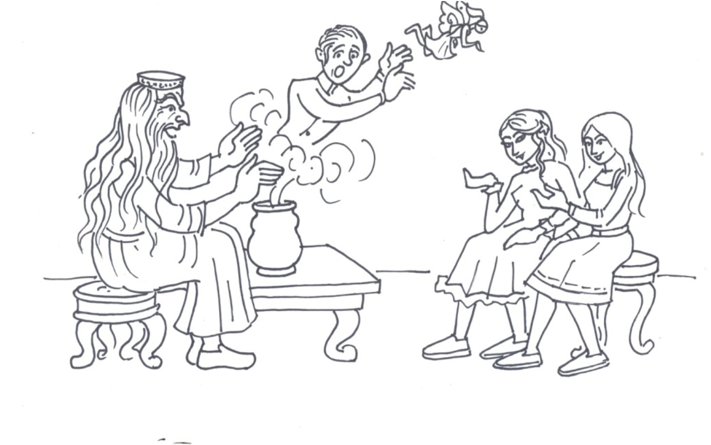
‘Who is he? How are we here?’ Sam and Rema asked.
‘We don’t know, he met us in the park, and brought us here.’
After a few minutes he returned.
‘I am Pullery. Don’t judge me by my name; I am not as funny as it sounds. I have spent almost all my entire life, searching for you all. There are a few things that I will not tell you. Once you finish your task you will know what they are. No one knows the things which I know. However, I am going to reveal to you a really important prediction. One of you will leave us forever and ever. But you still have time to return or, stay to finish off your task. I know why you all have come here. I can tell you where Camorte lives.’
‘Why were you waiting for us? You could have fought Camorte alone if you knew her whereabouts, and had all the powers.’ Sam retorted.
‘You don’t understand what I say! God pity children like you!’ He seemed irritated. ‘I am growing senile and weak. People think I am out of my senses and no one pays attention to what I say. I can’t defeat Camorte all by myself, but I can help you; I can tell you where you can find her.’ As he spoke further he seemed to be more mystical and calm.
Having regained his composure, he started once again in his usual voice, ‘Camorte has a black cat, which she uses to disguise herself. Whenever she thinks anyone can see her, her soul enters the cat, and her body becomes invisible hanging up in the sky. She has a weakness, if you hit something on her nose, she becomes stiff. This was all that I think I should tell you. Rest you will know later.’ Saying this Pullery laughed in a mysterious manner and left.
A hush descended over the foursome. They all stood up and came out of the house and flew back to the palace. They returned back to their rooms and started thinking about what Pullery had said.
Simon came to their room and asked them to come downstairs for the lunch.
This time they didn’t really pay attention to the cook Peter’s song. Something serious was going on in their minds. Suddenly Sam shouted while eating his salad ‘Got it!’
Emma and Reba understood that he must have got some idea. But others could not understand him neither could he tell them anything. He didn’t want merries to know anything about their plan.
‘What? Sorry, I don’t understand.’ Lavender asked.
‘Well I was trying to eat the broccoli but I think it was not soft enough so I couldn’t eat it.’ Sam said reddening in embarrassment.
‘We will take care of that.’ Lavender assured staring at Peter.
They finished their lunch and hurried off to Sam’s room.
‘We could go to Camorte right now.’ Sam said.
‘But how?’ asked Emma.
‘The smoky-pot Pullery used to bring us to him!’ Sam replied.
‘Yeah, we almost forgot about that.’ Reba said.
‘Let’s go to Pullery right now.’ Sam suggested.
‘No we can’t go now.’ Reba objected.
‘But why?’ Sam asked.
‘Didn’t you see how Pullery behaved when we asked him to help? I think we should make one ourselves.’ Reba suggested.
‘Make one ourselves? Are you out of your mind?’ Emma exclaimed.
‘We can take help of the library.’
‘Let’s see!’ Emma exclaimed.
They went to the library, most of which Rema and Sam had already explored. Here they again started scanning a books, but could not find anything about how to make a smoky pot. Maybe because they didn’t even know what it was called, after all it definitely wasn’t smoky-pot. At last they gave up and decided to take rest for some time. They didn’t leave the library; instead they rested their heads on the tables. Suddenly Reba saw some kind of pot on the window. She quickly went near it. It was a smoky-pot!
‘Everyone come here fast, I found it!’
‘Don’t joke Reba, not in mood.’ Sam said.
‘I ain’t.’
They went towards her.
‘We can’t just depend on it. Maybe it is a trap for us.’ Emma expressed her doubts.
‘Think positively, maybe someone is trying to help us.’ Sam said.
‘But who?’ Reba asked.
‘I don’t know but someone.’
‘And why would anyone possibly want to help us?’ Emma asked.
‘I don’t know, if you don’t want to try it you could just simply say no.’ Sam said getting a little irritated.
‘Let’s try it if you insist so much. Emma
Emma stayed back and the rest took the smoky-pot and went to her room.
‘Emma!’ Reba chanted in the smoky-pot.
Emma popped out of it. Once they were sure that it worked, Sam said, ‘Now we need to prepare. We need weapons.’
‘It’s alright Sam, but if we could find a smoky-pot so easily why couldn’t they find it? They could have found it and told about it to us earlier.’ Emma was not at all convinced for using the smoky pot.
‘Well we are just losing our precious time endlessly.’ Sam sighed.
‘I don’t think we could find Camorte so easily.’ Reba said.
‘So what shall we do?’ Emma asked.
‘We may transport ourselves to her. Or maybe near her.’
‘But how do we do that? The pot can only bring people near us, it can’t teleport us to them.’ Reba said.
****
EMMA’S GREAT IDEA
‘What could we do?’ Reba continued in the same breath.
‘We come back to the same point, we need to ask people, who know about that cat, and about Camorte.’
‘Who can be this old and sage who can help us? It’s been three generations since king Numpone and his courtiers left this world.’
‘Rema.’ Reba said unconsciously.
‘But I am only twelve, how can I know?’
‘Not you, I am talking about the queen Rema Roberta, I gave thy name inspired by her.’
‘But is she alive now?’ Sam tried to dismiss the idea by asking a leading question.
‘Of course not.’
‘So how will we talk to her?’ Sam persisted with his questions.
‘See what I do.’
Reba led them to a room labelled ‘NOT ALLOWED’ displayed prominently on its door and below it was inscribed ‘QUEEN Rema Roberta (FAIXIELAND QUEEN)’.
‘What is this Reba?’ Sam asked.
‘Wait and watch.’ Reba said as went inside the dusty room. The moment she entered she lost her independent will. She was not her usual self as somebody else’s soul had replaced her own and was probably guiding her actions and thoughts too.
Reba went towards a table with a folded paper kept on it. She opened it and started reading from it.
‘What’s happened to her? Is she in her right mind?’ Sam asked after looking at the dusty paper Reba was holding a few moments ago .You would barely like to touch or hold it. They were surprised to see the paper blank which Reba was just pretending to read. Though they were perplexed and couldn’t understand anything, they decided to follow her directions.
After sometime Reba opened a drawer and took out a photo frame. Suddenly her eyes welled with tears. No one could realise what was happening, but kept quiet. Reba then walked towards a wardrobe and took out a dress. She hung it back and went towards a frame with the royal family photo. She then asked, ‘Where is Camorte?’
‘Go east or the west, you will not find her.’ Spontaneously came the reply from behind the still frame.
‘Where will I find her?’ Reba asked more confidently.
‘Come to me I’ll tell you.’
Reba went close to the photo frame, followed by Rema, Emma and Sam. They found themselves drawn inside the frame by some invisible force. They twirled in complete darkness until they could once again set their foot on ground. They found themselves taken back in time to the actual evening when the picture might have been completed by the painter. Reba went close to Rema Roberta, and asked, ‘Where is Camorte?’
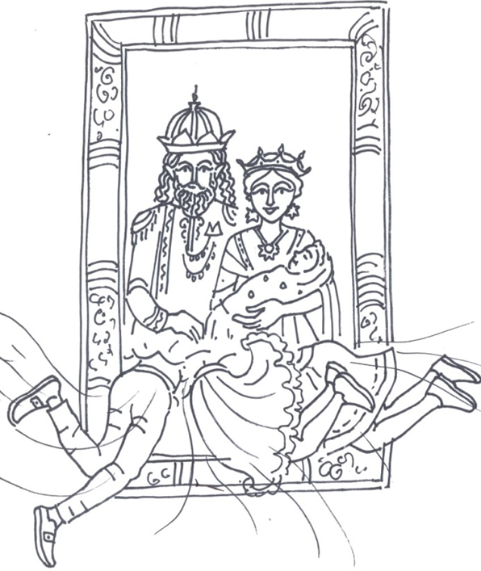
‘Congratulations, you came here. The cat is in the basement of the museum. She will run away once you reach her. But I can’t be sure about it still, and I won’t tell you anything now even if I know any more.’
They were once again plunged in complete darkness and, with the same twirling, were brought forward in time to their present existence in front of the photo frame. Once they returned they forgot everything that transpired inside frame, except, where they needed to look for Camorte. Maybe they didn’t forget where she was because it was the reason why they were taken inside the photo frame.
‘Let’s go to the basement.’ Sam said.
‘Why?’ Emma asked.
‘You don’t know?’ Reba questioned.
‘I know, but how do you all know?’
Surely they were not aware of each other’s presence inside the frame.
After a long conversation they could understand that they all went inside frame wherein they were revealed about Camorte’s hideout.
They went outside, and unfortunately met Luna. She, unlike her sister Maple or her friend Simon, always questioned them sceptically, whenever she saw them away from their rooms. Initially they suspected her to be on Camorte’s side. But could Luna be on Camorte’s side? They could overcome their doubts and abandoned the idea of Luna betraying them, as they came to know that her family had been serving the royal palace since the time of Helley’s ancestors.
Somehow they managed to distract Luna, and sped past the corridor. They flew towards the exit where mapier’s clock displayed no signs of danger.
They then flew towards the museum immersed in complete silence. As they entered it they started searching for the staircase. After a long stressful quarter of an hour wandering and running around here and there, they found the stairs. They went down the stairs and reached its end leading to corridors in all the directions. At last they found another staircase at the end of one of the corridors leading finally to the basement, which resembled more like a covered field.
There they saw a cat, a dog and a mouse chasing and running after each other. The cat was white with green spots; it looked weird as in Faixieland many cats had green fur.
They were disappointed not getting any clue that could lead them to Camorte, they flew back to the palace. They were feeling embarrassed as they had been sighted and observed by merries several times, excitedly flying towards their destination and later returning back with gloomy faces. They were worried of losing trust and confidence of the merries, and they losing hope of their fairy world coming out of the evil influence of Camorte.
All of them went to Emma’s room and sat silently thinking about their next step. Reba took a small chair kept beside a big wardrobe. Sam turned a chair kept beside a table, and as the back of it was not providing good support, sat with his legs on both sides of the chair, allowing him to stretch his legs. Emma was sitting on her bed with her legs crossed and face resting on her palm.
‘This might be our last chance. We need to be right, or else be ready to face a whole lot of doubts on our ability to help these pixies, fairies and merries. I feel uncomfortable with so many suspicious doubting expressions of merries, now questioning our presence here.’
‘Why not combine your ideas?’ Emma suggested.
‘But how do we combine our ideas?’ Reba asked.
‘Let’s talk to Rema Roberta; she can help us teleport ourselves there with or without the pot.’
‘Okay let’s try it, hope it works.’
They went to the same room, with a lot more confidence than before. Perhaps their earlier forays were coming in handy this time with more familiar passages, more familiar walls and most importantly more familiar rooms. They went to the room that belonged to Rema Roberta.
‘Excuse me Queen, How can we reach Camorte?’
‘Wait, she’ll come to you.’
They waited in anticipation to get further clues but there was no reply even after waiting for a few minutes.
‘Queen?’ Reba broke the silence.
No replies.
They did all sorts of things to attract Queen Rema’s attention, but failed in all their attempts. They couldn’t understand what she meant by “Wait”. Was she being too reticent or was she selfish in not extending help or was she not happy with their presence in fairy world trying to resolve its problem. Did she ever care for her people of the kingdom? Well no one knew what was going on queen’s mind.
Seeing the confusion prevail Reba suggested, ‘Let’s do whatever she tells. Wait for the right moment. Till that time we need to think about how we are going to kill Camorte. We can’t possibly challenge her into a physical fight.’
‘Should we make weapons?’ Sam suggested.
‘Of course not, she will snatch them and not allow us to use the weapons.’ Emma rebuffed his suggestion.
‘You need to make yourselves the weapons and ensure that no one snatches it away from you.’ Unexpectedly Moony appeared right in front of the totally dispirited chosen ones and offered a way out.
****
YOU COULD HAVE!
‘Moony! Were you listening everything?’ Sam asked.
‘It’s bad manners; Moony you should never do eavesdropping!’ Emma reprimanded her.
‘But how did you know that what we were talking about? How did you know that we were here?’ Reba asked.
‘I won’t tell anyone, bu’ think you forgo’ tha’ we know everything, and so I was never eavesdropping but, because you knew what you were talking about, I know that too. The new fairy rule says that whatever the fairies and merries know the pixies are aware about it too.’
‘Yeah we actually did forget.’ Reba blurted out, ‘Rema weren’t you aware about it and also aware about our purpose?’
‘I indeed was.’
‘And you didn’t have enough courage and sympathies for us to help!’
‘I don’t understand you, what do you mean?’
‘When we were struggling to find out where Camorte is, you lost all your magic powers. Right?’
‘It wasn’t like that.’ Rema said a little scared and nervous.
‘So what was it?’ Reba shouted at her.
‘Alright if you do think so, I am leaving, I am not bearing and insult any further.’
‘No one even needs you, do whatever you want to! And well, you could have just replied and not extended this needless argument. You’re just a pain.’
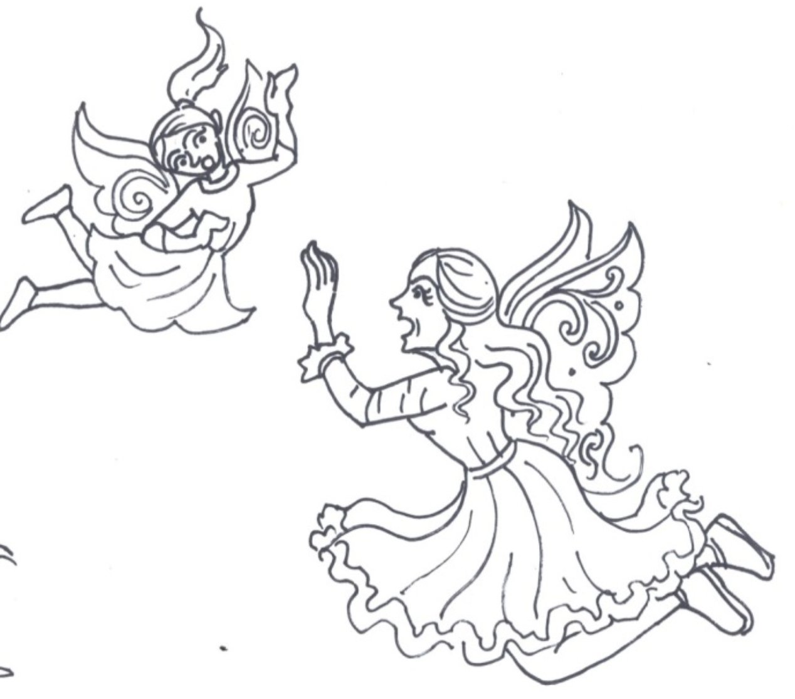
Rema instantly flew out of her room in dismay feeling let down by the three friends she had been escorting and attending to thus far. Moments later Reba returned back to her room with mixed feelings for Rema. Emma and Sam were left alone, both just glancing at each other and giving bewildered and befuddled looks to each other.
‘We ain’t sitting here for just watching helplessly at our moves and plans getting derailed and things go wrong, we should think of something fast.’ Sam at last broke the heavy silence.
‘Yeah but what else could we do?’
Again silence engulfed them, as they were totally clueless, till Emma spoke, ‘Have you ever thought of the point Reba was arguing on? Why didn’t Rema help us?’
‘It’s not a big point, besides it’ll make Rema more stressed and lonely.’
‘But if we don’t, then Reba will feel lonely.’
‘So what should we do? Reba or Rema?’
‘I don’t know.’
‘Part our ways. Only one solution, part our ways and make them see reasons to shed their misgivings for each other, you get to question Reba and accept Reba, and I, shall probe Reba to come out of her hurt, ‘kay?’ Sam decided.
‘Right, you go your way and I’ll follow mine.’
They both proceeded for their respective inquisitions.
Emma could hear sobs coming out of Reba's room once she reached there. Usually Emma entered the room without warning, but today, she knocked and waited for the reply. Reba took a while to open the door. She smiled, and let Emma in. Emma didn’t expect this behaviour from her. She thought that Reba would still be mad at her for coming to her room. Instead Reba was too polite and courteous, completely in command over her emotions. However, her room setting betrayed her composed self she presented in front of Emma suggesting her how crazy she could probably go. The pillows were lying on the ground, the bed sheets had tear stains on them, and it looked as if she had been sobbing for quite some time. Well whatever we think is not always right, no one would have ever thought that Reba and Rema’s friendship wouldn’t last long. Emma sat on the edge of the bed while Reba took a place close to her on a carpet, with her hands tied around her legs and face resting on her knees. Emma started talking about general issues trying to make her get into a conversation to raise the topic of Rema and her fight. Reba however, mostly kept quiet, lost in her own thoughts, just nodding from time to time. Exasperated, at last Emma mumbled loud enough so that Reba could hear all her words clearly, ‘When will you talk to Rema?’
‘Why did you come to my room?’ Reba asked ‘I don’t want to talk about her, if you don’t have anything else to talk about you may just leave me alone. You all keep your sympathies for her, but I am not going to be duped by her anymore. I just asked her a question and she could simply have clarified, but she didn’t.’ Reba seemed to say it all in one breath almost screaming at Emma.
Emma left her room and returned back to hers. On her way she saw Sam opening his room door. They just looked at each other blankly not bothering to narrate their experience. She understood that he too didn’t succeed in making Rema to break her silence with Reba.
Reba in her room was still feeling left out alone in her thoughts. She felt miserable, she thought of running away but then thinking of her friends gave up the idea. After sometime she found herself immersed in long silence, feeling like crying. Thoughtless, sad and desperate, she knew nothing but to talk to Rema to. She no longer could withstand this aloneness. After all how long can she allow this animosity last?
She stood up and immediately proceeded towards Rema. She felt being supported by some unknown power, guiding her towards the basement where Rema was to be found. Though everyone had last seen Rema in the entertainment room, Reba had no doubt she would find Rema in the basement.
As soon as she saw Rema, she started feeling guilty and apologetic. Her thoughts and feelings so gripped and paralysed her, that she stopped flying almost thirty feet above the ground and started falling towards some icicles growing on the basement floor, losing half her consciousness. Rema tried to save her with spells. She took out her wand and shouted, ‘Paso-Peebos’ which was meant to make objects fly. But pixie spells did not work in the basement, and being an immature pixie she was not aware of it.
Reba was now just five feet above the ground. Rema took out a sharp hair-clip she was having and threw it with all her might towards the central icicle, which was the tallest. The clip disappeared as it touched the icicle and instantaneously the icicles disintegrated into a pile of white confetti, on which Reba gently landed without getting injured.
Reba got up straight and said, ‘I don’t know what happened right now, but I am really sorry for what happened in Emma’s room.’
‘I am sorry too.’ Rema said.
‘I know that something tragic happened. There is pain in my body, and I have lost my memory. I don’t remember what happened. Oh! Your hand is bleeding.’ Reba informed concernedly immediately on spotting her bleeding hand.
‘Let’s first go to Sam and Emma and ask for their forgiveness for giving them trouble due to our behaviour. Let’s invite them to entertainment room where I will narrate everything.’ Rema said.
Reba entered Emma’s room, apologized for her behaviour, and told her to come to the entertainment room. While Reba was with Emma, Rema was leading Sam to the entertainment room.
THE SUUDS
‘You both are together?’ Emma asked when she saw Reba and Rema sitting together in the entertainment room.
‘Yeah, of course we are. I ain’t gonna run away neither is she gonna be depressed forever.’ Reba said half smiling.
‘You were going to run away, and she was in depression!’ Emma yelled at Reba.
‘And we fought with each other.’ Sam added.
‘Why?’ Reba inquired.
‘Cause we wanted to resolve your fight!’
‘You shouldn’t have, see we did it so soon.’ Reba giggled.
‘How did you manage to do it? We almost lost hope.’
‘I went to Rema, to apologise, and after that I remember nothing.’ Reba said.
‘After that she became unconscious, and started falling towards icicles on the floor of the dungeon. I couldn’t use my magic there, I don’t know why. I used my hair-clip to vanish the icicles and they became confetti on which Reba fell without any injury. I took her out and gave some choco-clay. And she was alright.’ Rema added to Reba’s half told story.
‘How did you vanish the mighty icicles with your mere hair-clip?’ Sam questioned.
‘Well I used my immortality suud.’
‘What is immortality suud?’ Reba asked.
‘Pixies don’t die as long as they have it. Each pixie has its own immortality suud.’
‘Syoud?’ Emma confirmed its pronunciation.
‘Right suud.’
‘So what will happen now?’ Emma asked.
‘Now I am immortal no longer.’
The short silence broken as Sam almost fell from the chair he was rocking on.
‘Well can you tell us more about suuds?’ he asked.
‘Yeah well, ummm… they are really useful stuff. There are immortality suuds, happiness suuds, magical suuds which give you magical powers and the last one that I know is friendship suuds, it never lets you be alone. Your friends will get their own suuds if they are honest and faithful in their friendship. Eventually all these get converted into immortality suuds while doing their own duty too. There are many other suuds that I don’t know, and probably no single pixie is aware of all the suuds. These are really complicated stuffs. If they aren’t used for right purpose, the owner will be punished. It can even freeze your brain if you are wearing a hair-clip as suud, or, it can freeze your heart if you are wearing it as a locket.’ Rema explained.
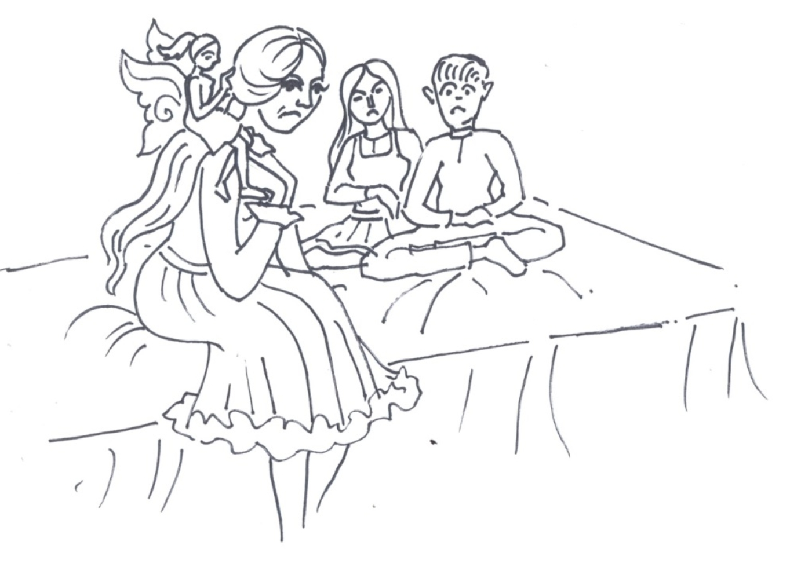
‘Would you mind telling us why you didn’t help us… well can you answer my errr… question.’
‘Of course I can. Pixies only know the things they were taught or as per the new fairy rule all the things the fairies know, the pixies too have knowledge about it. No pixie was ever allowed to interfere in the Mexie-war, which divided not only the boundaries but also the hearts of fairies. And we don’t know what Camorte is up to, she doesn’t even let her servants know about it. Of course, if there are any left now. And we never used smoky-pots so I did not know about that either.’
‘I am so sorry for doubting you Rema.’ Reba apologized profusely, overcome by guilt and shame.
‘It’s okay, I don’t mind.’
Emma informed, ‘There is a fair being organised in Merryland. I saw some fairies, um… merries, flying and announcing about it. Let’s get ready, the timing was around six I think, and it is half past five already.’
They all hurried back to their rooms. Reba asked Rema once they reached their room, ‘Well didn’t Moony go with you when you left Emma’s room?’
‘She did come, but she left me while we were in the entertainment room. She told she was going to the washroom. I waited for her for some time but then thought she considered leaving me better than to stay with me, a pixie who left her mistress so early after such a small argument. You know it’s shameful if a pixie runs away from its owner.’
‘Maple must have taken her for some important work.’
‘Yeah I think you are right.’
They got ready and waited for others near the palace exit. After sometime everyone came out and they set off for the fair.
There were many rides similar to the ones in the mirror world fairs.
The foursome enjoyed their roller coaster ride, which was not on its track, but was flying in the air, held by some mysterious force to its definite path. It reached highest possible and then all of a sudden it made a sharp steep fall near a shop. The riders would have definitely been thrown out, had it not been the wings of the roller coaster which tightly leashed them to their seats.
The next one was known as “The Twitch” which started with a jerk even before everyone could board and take their seats. The riders were pulled by the wings. The wings were shaped like a bowl which could accommodate four merries. It was a slow and steady ride until it fell down with a lot of force and started its journey up back again with sharp twirl and small twitches. As the movements of the ride straightened, the wings were turned upside down with a few merries falling from it. The merries started flying at the right time and took their seats safely back again.
As they alighted after the ride had ended they felt exhausted and decided to take a brunch before moving on to the ride.
The foursome’s next ride was a thrilling experience. It looked like a flying boat getting right under each other and sometimes even crashing into the other boats.
They then saw some flying horses in a nearby space. They decided to have a closer look and saw a ride in which the riders had to win a hurdle race mounted on the flying horses. They didn’t participate but just stood behind the barricades and watched the competing riders. It was the only place except the palace and LAMICHOCONGLATE where they could rest their feet.
After sometime they were dead tired. They were also hungry as their earlier brunching was hurried in excitement to get to the next ride. They went to a shop, and had a Merryland delicacy comprising tasty custard pudding served with chocolate wings. After a while they returned to the palace. It took them half an hour to get back, because they were staring at all the shops and merries and everything on the way, and, they were also too tired to fly at full speed.
They met in Emma’s room after freshening themselves up with scented water and aromatic face wash.
‘It was so good. Never have I ever been on a ride like this before!’ Emma exclaimed.
‘You are right.’ Sam added.
‘Bye everyone. It’s pretty late now, meet you all at the breakfast tomorrow.’ Reba said leaving Emma’s room.
****
THE LOCKET
October thirty-first, half past five in the morning Reba had a new day to start. She quickly dressed up and pottered outside her room. It was a day before her birthday and she was as happy as she could ever be. She didn’t talk to anyone about her birthday, because usually no one ever wished her except Emma, Sam and Moola. Besides she thought that it didn’t matter to anyone except her. If her parents had been alive they might have been very happy and probably would have showered her with gifts.
After sometime she thought for how long she hadn’t talked to Rowena, Emily and Christophe. She went to her room to write a letter to them. She took out a huge and beautiful white quill from the cupboard, but she couldn’t find any parchment in there. She went near the window to distract herself and stood there watching some unicorns flying nearby. Suddenly she saw a parchment stuck on the horn of one of the unicorns. As she wanted it, she murmured wishing the unicorn to give it to her. In a swift glide the unicorn reached her and she plucked the parchment off its horn.
‘You can understand what I said?’
‘Yes I can.’ The unicorn replied in a majestic and polite voice. Reba was surprised. She was just asking it in a very casual and obviously-of-no-use kind of voice. She didn’t expect it to actually fly towards her.
She took the parchment and started writing her letter. Soon she finished putting down her thoughts in the letter and began to wonder how is she going to post it. Just then a unicorn came and said that it will take the letter wherever Reba wants it to reach, but only if she is sure to make it, her own unicorn.
‘Of course you are.’ Reba replied.
The unicorn took the letter in its mouth and disappeared in a swift movement. Reba looked at the clock. It was quarter past seven in the morning. She decided that after a short walk she shall wake up Rema.
As she wombled in the hallway outside her room, she suddenly heard something strange, ‘Mo’e outta the way’.’ A fairy was mopping the corridor, in whose way Reba was coming.
‘Sorry.’ Reba moved, and asked the fairy’s name.
‘Iglestra, i’ my nam’, people call me the mopping-fai’e’
‘I am so sorry, Iglestra.’
Iglestra went forward skating on the board and mopping. After being for such a long time amongst the fairies, today she concluded that the fairies did all the cleaning works. Musing about all these she met Moony on the way.
‘You’e awake so mornin’’ Moony exclaimed as she saw her.
‘What are you doing?’
‘Nothin’ ‘jus’ have the ‘abit of wakin’ up early.’
‘Why?’
‘Dunno, just a few habits you know.’ Moony replied smilingly.
Reba went to her room, and woke Rema up as it was quarter to eight. Rema went to the washroom for freshening her up and. After sometime they together proceeded towards the dining hall and ate their breakfast with Emma and Sam, who were already waiting for them.
After breakfast Reba looked at the clock and when she turned back everyone was gone. She searched for them everywhere but they were nowhere in sight. She once even lost her way back room trying to find the others. She figured it out after sometime though.
‘Where have they gone?’ Reba mumbled. She went searching for them in the washrooms, alleys entertainment room, their rooms, but they were nowhere to be found. She went back to her room and slept.
She woke up at two in the afternoon and rushed to the dining hall where she found everyone else. She started eating her lunch, but her fork fell down. As she bent down to pick it up and saw all the legs moving away from her. In panic she lifted her head and banged it on the downside of the table. Till the time she managed to lift her head everyone was gone.
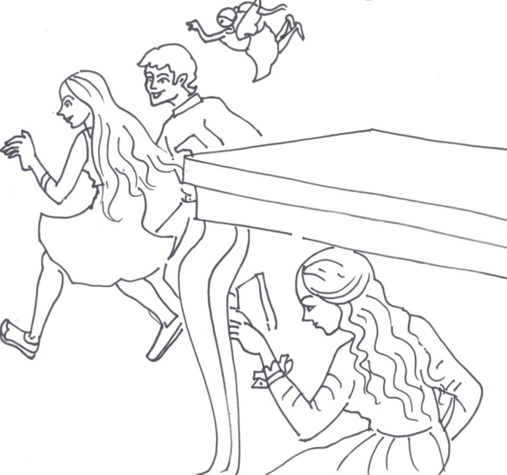
‘Oh! Not again!’ She shouted and marched out of the dining room in anger without even finishing her lunch.
Her experience till now suggested that their disappearance may be temporary and with a throbbing pain in her head she decided to recline on her bed. She dozed off again. But this time didn’t wake up till the morning of the next day.
She dressed herself in beautiful clothes, as she remembered it was her birthday and wished somebody could make out that it’s her special day. , and went out. She didn’t find Rema in room so she just thought of going for the breakfast. But as she stepped out of her room, she heard a voice in unison, ‘Happy birthday!’ All the courtiers, Helley, Sam, Emma and Rema shouted. Reba was overjoyed to see them and excitedly started opening the presents they had brought with them. The first one was from Emma; it was a beautiful maroon jumper with white flowers only around the neck, and a small ‘R’ for Reba between the flowers.
The next gift she unwrapped was from Sam. It was a quill and parchment which could write whatever they said, and a beautiful fairy perfume bottle.
Christophe, Emily and Rowena gave her a unicorn- saddle, which looked more like a crown with two weird dangling ropes for the rider to hold. Once worn it could understand where ever Reba wanted to go for a ride.
‘Do you even have a unicorn?’ Sam asked pointing towards the saddle.
‘Yeah I do have a unicorn. I wanted to tell you all about it yesterday but you didn’t want to talk and so kept running away all the time.’
‘But I met you.’ Moony interjected.
‘But you were in a hurry too, weren’t you.’
‘No actually I was busy preparing for today. We all wanted to make it a grand birthday for you.
She opened the last gift given to her by Helley. It was a locket with a note,
Dear Reba,
Wishing you many happy returns of the day. This is the locket some people say your mother kept for you but she couldn’t give it to you. We kept it in safe custody and are pleased to present it today as your birthday gift.
RSVP
‘Oh cool, isn’t it! It is your mother’s locket that you have inherited today on your birthday.’ Emma exclaimed.
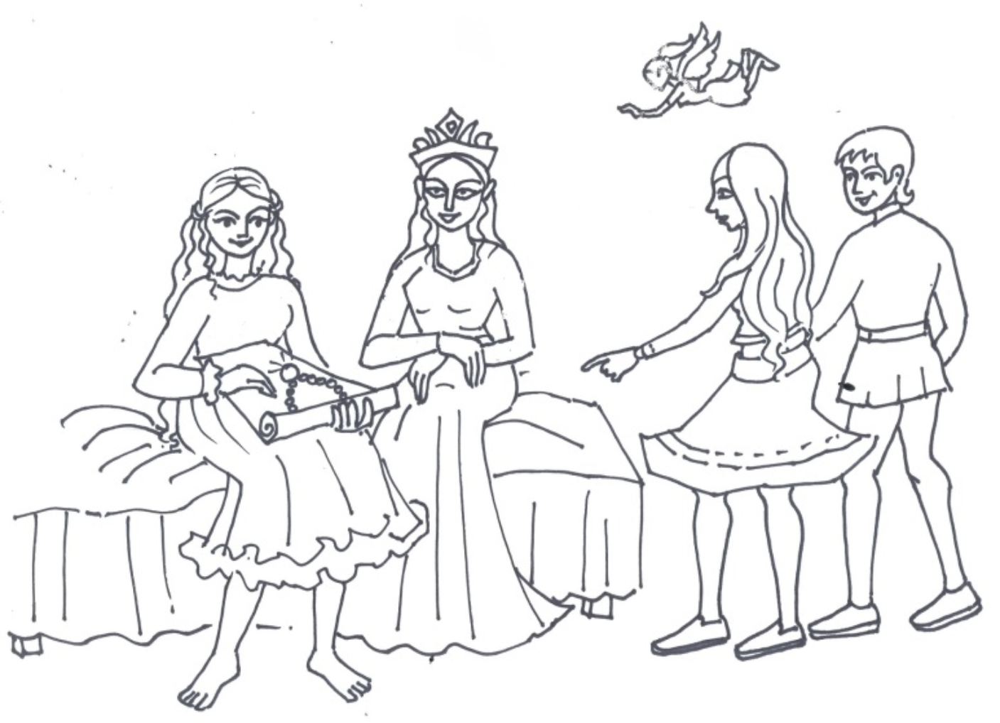
‘Yeah it is, but how did she get it?’
‘She’s the queen.’
‘Yeah but, still it is odd.’ Saying this Reba wore the locket. It was a beautiful locket with a dark blue large stone in the middle. 

****
 WHERE IS THE GROUND?
WHERE IS THE GROUND?
‘She’s sent it with an RSVP, think you should ask her how she found it.’ Emma suggested.
Reba accepted her advice and wrote a letter to Helley thanking her for the gift and also asking how the locket reached her. She also wrote a thanks letter to Rowena, Emily and Christophe and sent all these letters through Teddy, her own unicorn, with its crown like saddle.
She kept waiting for Helley’s reply which never came despite a long time. She did however receive mails from Rowena, Emily and Christophe’s acknowledging her own thanksgiving letter.
‘I don’t know when Helley will reply.’ Reba one day expressed to Emma while having dinner.
‘Be patient she must have sent it. And it’s not long since you sent her the letter.’
‘It’s almost been a week! My letter reached Rowena, Emily and Christophe in just one day, and I got their reply next day. Rowena, Emily and Christophe received my thanksgiving letter in a day and I received their acknowledgement the very next day.’ Reba replied in exasperation and desperation.
‘You need to calm down, you’re too stressed. Helley must be busy, or else she would never have avoided your letter.’
‘I ain’t stressed, besides I have never met a person so busy who can’t reply to a single letter. What was she expecting of me to do? Did she expect me not to have questions about how my mother’s locket reached her. Now that she has not answered I am having doubts as to whether I should wear the locket.’
‘You are stressed Reba. See now you are eating steak with bananas? And c’mon she’s the princess she may have other more important issues to deal with.’ Emma was trying her level best to allay her doubts.
Reba felt something stuck up her throat, as Emma said that sentence. Reba instantly threw out her mouthful of chewed food on the table in front of her with a forceful cough.
‘Sorry, and thanks for telling its banana. Why do they have to serve bananas for dinner?’
They wound up their dinner without bothering to finish it. Emma insisted Reba to accompany her to the entertainment room as she looked really worried.
As they reached the entertainment room Reba saw the walls turn red, suggesting that she was both stressed and angry. Emma told Reba to play some fairy chess to distract her mind from Helley and the locket.
They started their game. In a few minutes Reba had three magical creatures, eight guarpies and one queen. Within few minutes there was a big twist in the game. Emma possessed all the magical creatures and the queens, and Reba was left with only nine guarpies, thus making her lose the game.
‘Congratulations you won.’ Reba congratulated Emma unenthusiastically.
‘It was an interesting game.’ Emma on the other hand was too pleased with her victory. It was not very common for her to win hands down against Reba.
Reba now saw bright yellow walls suggesting that she is happy and cheerful. Then getting the last glimpses of each other, Reba and Emma set off for their rooms.
While Reba and Rema were preparing to sleep, Emma knocked on their door, asking them to let her sleep in their room, as she was feeling scared to sleep alone tonight.
‘You’ve been sleeping alone for so many days. No one is going to harm you there.’ Reba said.
‘I am not scared for myself but for you two. What if someone knocks on your door and you open it thinking it’s me. I’ve a premonition that we may have an intruder who may try to harm us.’
‘Nothing like that is going to happen let’s try to be positive.’ Rema cut in their conversation.
‘Right, but still I want to sleep with you.’
‘You can, no one stopped you.’
‘So can I sleep?’
‘Of course.’ Reba said.
‘But where?’
‘On my bed, of course there is no other place to sleep here, or if you want to sleep on the floor?’
‘No!’
Reba smiled, and let her sleep on her bed. They continued their conversation till two in the morning. It was after a long time that the two friends were getting to talk to each other the way they used to do in Oliverasin. Emma fell asleep in the middle of their conversation and Reba too immediately fell into a deep slumber.
Reba woke up at half past four perspiring profusely. Perhaps she might have seen some nightmare.
‘Not again, why can’t I sleep? I didn’t have any nightmares. Or perhaps I had?’ Reba mumbled.
She dressed herself up and thought of taking a stroll out in the open as she was too bored. She came out of the room most unexpectedly found Moony lurking around.
‘Hi! Coincidence isn’t it we met again at the same spot same time!’ Reba waved to Moony.
She didn’t reply, instead she flung a pot towards Reba.
‘Moony! What are you doin’!’ Reba said as she ducked to save her head.
There was a slight shake in Moony’s head. She appeared as if she was lost and was now coming back to her real life and senses.
‘What happened? How are you here?’
‘I think I should ask that from you.’ Reba retorted
‘Um… well I came for eating.’
‘Why here?’
‘Not here, I was with Peter and Pal.’
‘But they don’t seem to be here.’
‘Yeah, they ain’t here, they are in the kitchen.’
‘So you should’ve been there I think.’
‘I am going sorry.’
And Moony went past Reba towards the kitchen while she went outside the palace. She flew on to the top of the palace and perched herself there on the edge. She was thinking about Moony and her rude behaviour. She was also reflecting on what kept waking her sleep. She sat there for a long time, but all of a sudden she lost her balance and fell off. She could just flap her wings at the right time to prevent her from having a nasty fall. Wait, there was no ground here so if she would even have fallen what would have happened? She stopped flying, and started falling intentionally.
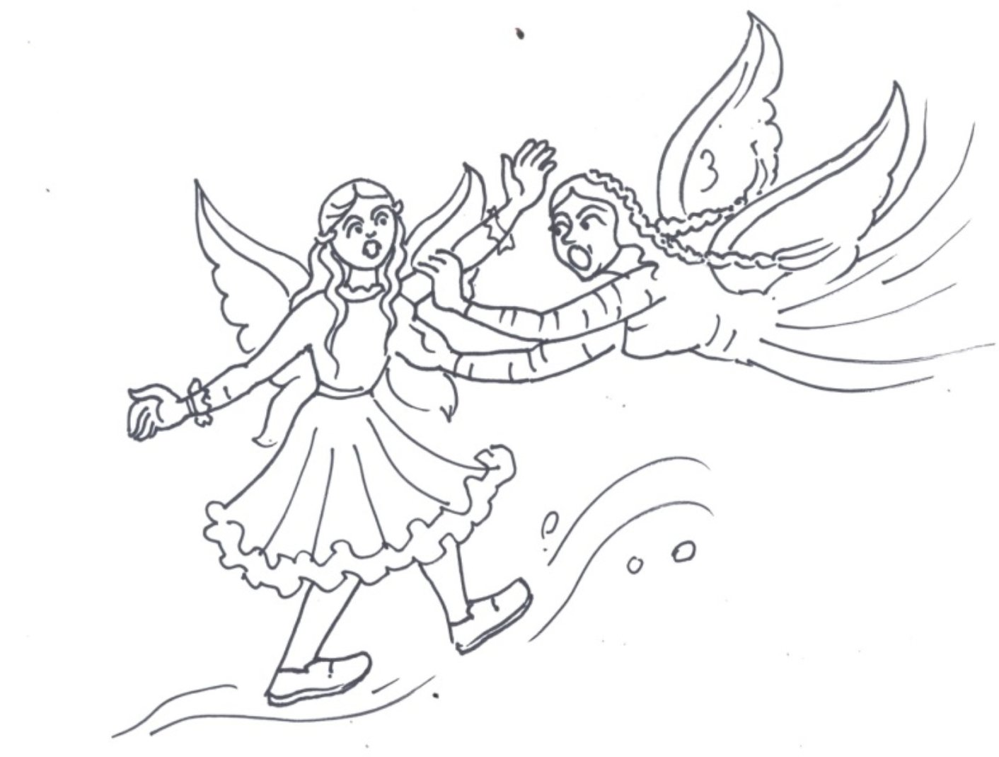
A merry rushed towards her and caught her breaking her free fall. It was Luna, She’ll start again, Reba thought.
‘What were you trying to do?’
‘N...n…nothing.’
‘Weren’t you trying to fall down to see where the ground is? If yes you did a very bad job. Down there, is fire and water and you won’t be able to breathe. People have died trying to discover land below.’
Reba didn’t say anything; she was too embarrassed to speak to Luna. She went back to the palace and had her breakfast.
****
THE CEREMONY
At the breakfast table Reba told Sam, Emma and Rema about her experiences in the morning.
‘I don’t know, but I too can sense something’s awry going on here. I never expected Moony to behave the way she did with. As to your idea of exploration of the missing ground think it was your own stupidity, you could have easily asked someone about it without endangering yourself.’ Emma said.
‘I accept my mistake, but I suspect the merries. We doubted on Luna and now all of you know about Moony’s behaviour.’
‘You’re right, fairies always supported us, but here the merries are literally tryin’ to kill us.’
‘I don’t agree.’ Sam said, ‘Maybe there is someone who is controlling them all, and as for Luna, she’s been like that for ages, and now you can’t blame her for all that has been happening to us here.’
‘I agree with Sam.’ Rema said.
‘Maybe you’re both right.’ Both Emma and Reba spoke together and smiled at each other.
As they were talking, the door opened and Lavender entered the dining hall to announce, ‘Good morning everyone, I have organised a vow ceremony wherein we shall be taking your pledge to never forget the Merryland and also not to reveal about it to anyone of the mirror world. If you want you could always stay with us.’
‘That’s pretty fine with us.’ Sam declared.
‘So shall we organise it tomorrow?’ Helley asked.
‘Right, in fact anytime.’ Emma added.
They had their breakfast quickly and rushed for shopping their essentials. They didn’t have anything right to dress them up for this occasion.
They bought their dresses from ‘GOOSEBUY-SHOESBUY (MERRYLAND)’ and also ate some lamington from Lamichoconglate. As they had some leisure time left, they decided to participate in fairy chess competition. Everybody was thrilled as Reba, Emma and Sam, in a team, won the second prize.
They returned back to the castle by late evening and after quick dinner retired to their rooms for early sleep.
The first rays of sun found the foursome fresh and energetic.
‘Are you excited for today?’ Emma asked.
‘Yeah.’ Reba replied.
‘Indeed we are!’ Sam joined in with excitement.
They decided to have a quick game of chess before breakfast was served. It seemed as if they were probably getting addicted to fairy chess.
They played three fifteen minute games on the trot. Sam proved the best in the first round as he won the first match. However, the next round was won by Reba. Sam again took the last round. They wanted to have another round but realised the breakfast was ready, and, they did not want it to be delayed.
As they finished their breakfast they discussed about what their next step to get to Camorte and finish her off should be. All of them had different ideas, and could not narrow down to the best option for mission. At last they concluded not to worry about anything as they had learned quite a bit about Camorte, and the kind of tactics she has. They decided that if they face Camorte anywhere suddenly, they should immediately stiffen her by throwing something at her nose. After that they could quickly think of a plan to defeat her.
Sam informed that he was finalising details and characteristics of the cat Camorte had. This was important because, if she comes in form of her cat they could easily identify her.
After sometime they went back to their rooms. Reba was reading a book, while Rema was trying to establish telepathy with Moony to ask her whether her spells work in the dungeon. Soon after clarifying all her doubts Rema returned to her bed and took a short nap waking up around seven in the evening. She had to remind Reba that they needed to get ready for the ceremony. As usual Reba was so engrossed in the book she was reading that she had forgotten about the ceremony and had lost the track of time. They quickly dressed up and reached the vow ceremony.
Reba had a turquoise evening gown with matching shoes. She had difficulty in making a bow in her hair, however with Rema’s help she could complete it beautifully.
Rema was wearing a light pink gown. She had her usual short and curly hair.
Once they reached the ceremony they met Sam and Emma who were already waiting for them. Emma was wearing a magenta gown with her usual curly hairs. And Sam was wearing a suit.
They sat on one of the tables, waiting for the fairies to arrive.
‘Do you think they have invited the Faixieland fairies?’ Emma asked.
‘They must be invited.’ Rema said as all of a sudden, they spotted Rowena and other fairies. They approached towards them.
‘Hi!’ They acknowledged each other.
‘Missed you all so much.’ Rowena, Christophe and Emily added.
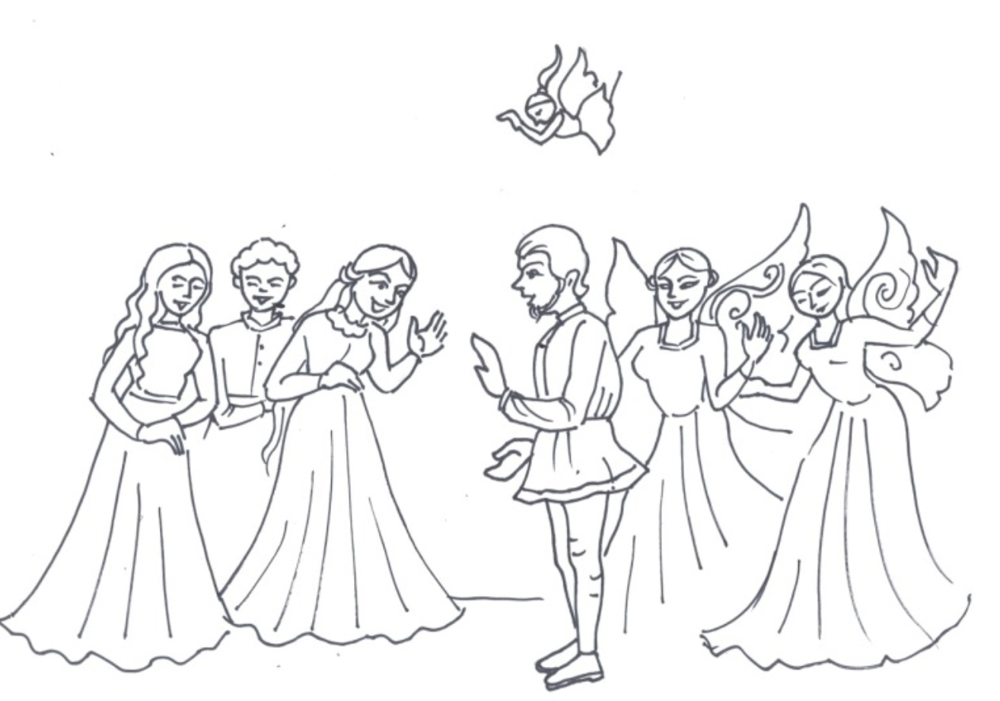
They gossiped for some time, till it was time to dance. As per the fairy tradition and regulations all the vow ceremonies started with a dance. Reba, Emma and Sam didn’t dance as they didn’t want to. Suddenly Reba saw a cat trying to enter into the ceremony hall sneakily with very strange actions. Reba noticed a small child watching it, being amused at its movement. As soon as his mother called him and he turned the other direction, Reba saw sparks coming out of the cat’s paw. It was definitely something very abnormal, the cat had mystical powers it was doing magic! Reba had a hunch that the cat was Camorte.
****
CAMORTE AS CAT
‘Emma see that cat, see what she’s doing.’ Reba whispered.
‘Reba she must be Camorte, she’s doing magic!’ Emma exclaimed.
‘Yep, shhh…’ Reba whispered again.
‘Let’s catch her.’ Emma said standing up and preparing for some sort of physical fight.
‘No we ain’t sure, people here might misunderstand us.’ Reba seemed to prefer restraint and precaution.
‘Sam, see the cat.’ Emma drew Sam’s attention, who was engrossed in some game with another male merry sitting beside him.
‘Oh yeah it’s so cute you can take her if you want I don’t think it is a pet of anyone.’ Sam seemed was not ready to get distracted from his game
‘Sam!’ Emma shouted, ‘It’s serious!’
‘Sorry mate, we’ll complete later, better luck next time.’ Sam assured his playing partner as he swiftly moved near Emma.
‘What?’ Sam’s sharp tone demanded a good reason for having been interrupted in his game.
‘Match the cat’s features with your notes in your diary.’ Reba prompted.
‘Wait let me see.’ He quickly took out his notebook. ‘All the features are same.’ He said awestruck. ‘Let’s catch her without any delay.’
‘No! See you two be ready to defend, I will do something, okay?’ Reba whispered as she moved away from them.
‘Ya, but…’ Emma could hardly utter her doubt before Reba was already gone. She hurried with quick short steps towards the exit door and immediately rushed to Madam Roberta’s room. King Numpone had made the room her memorial after she died. Reba for the first time entered this room helped by some spiritual and mystical power which always guided her in unknown places and circumstances.
The large room had gathered thick dust and looked as if it had not been in use for years. It had portraits of Madam Roberta everywhere.
Reba opened a drawer and took out a green potion and kept it on a table before moving on to open an almirah. She moved in a weird way, suggesting an invisible force guiding her. She took out another bottle from the almirah, which looked empty but had some invisible potion inside it. Reba seemed nicely aware and knowledgeable of its contents. Probably her spiritual guidance seemed to be in total control of her senses.
She held the green potion in her right hand and mumbled ‘Elixir of love,’ and then picked the second bottle chanted ‘and Elixir of death,’ She mixed them together and murmured ‘when mixed, form the elixir of victory, defeating the enemy, burning it up with jealousy, into ashes.’ The potions in the bottles turned purple-greenish which she proclaimed to be “the elixir of victory”.
Reba took this potion along with herself to the ceremony hall where everyone was enjoying themselves, totally unaware of what the foursome. She joined Sam and Emma and announced to them, ‘See I’m going to undertake something very risky. Please pay attention to whatever I say or do. Be ready and stand in defence, as I already said, right? I am going.’ Seeing the worried face of her friends she added, ‘I don’t have the time to explain things, but please trust me. Do not spend useless thoughts on about what I am going to do, just focus on your roles.’
‘But Reba you need to…’ Emma tried to pull her in a discussion. Avoiding her Reba slowly went closer towards the cat.
Camorte could sense danger, as Reba came closer. She shunned her cat avatar to her normal appearance. Surely she understood she stood little chance of a fight with all her feet one the ground. The pomp and gaiety in the hall all of a sudden was replaced by cries and shrieks. The merries huddled themselves into corners leaving more space for the cat, and now Camorte. Everyone’s attention was now glued to moves of Reba and Camorte.
Camorte was now ready to fight. She looked fierce, with tight curls in her open hairs, and, black outfit with black and green dragonfly wings.
Rema threw a bowl towards Camorte's nose, and as told by Pullery it didn’t do much good except that it startled Camorte and left her incredibly stiff. It was enough for Reba to lurch towards taking care not to spill ‘the elixir of victory’. Suddenly Reba felt long cold fingers grip her wrist.
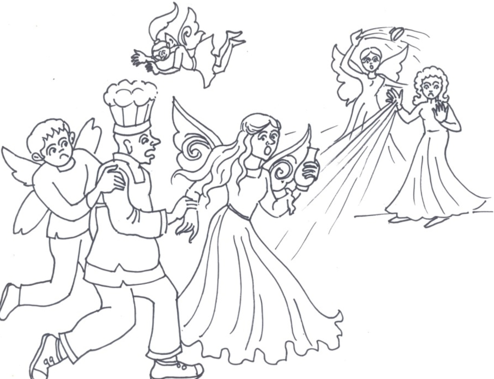
It was Peter, the Cook Peter! He pulled her back and sang, ‘What did you think? Cook Peter cannot cook something as evil as this? Ahaan?’
Reba pushed him with her elbow, as Sam caught him from behind, Rema dazed him with her spells.
Reba dashed towards the now conscious Camorte as Emma threw a bowl from behind hitting Camorte’s nose. As she once again became stiff Reba poured the entire potion in her mouth.
Another of Pullery’s prediction was coming true. As Camorte cast the killing curse on Reba. In just a fraction of a second Reba was on the floor as Camorte’s body became ashes that lay around Reba's feet and clenched fists.
There was complete silence in the hall. Tears were profusely falling off the eyes of Emma who was sitting beside Reba’s still corpse, so did Rema, Sam, Rowena, and even Helley. But then something which took them aback.
The tears of the pixies were drawn to each other in the air and formed a beautiful golden bird with a blue pearl on its forehead. As it was brought to life by some unknown powers, it flew towards Reba and subsumed into her body.
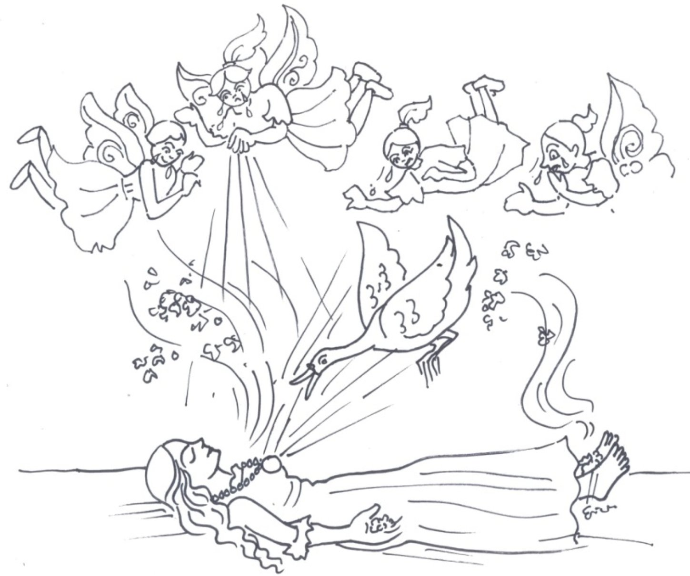
Slowly Reba opened her eyes and found herself amidst claps and cheers all around her. All the pixies and xhinos got a new suud, including Rema. Reba asked, ‘Is Camorte dead?’
The whole hall shouted, ‘Yessss!’
Helley approached Reba and took off her crown.
She said, ‘I am so sorry Reba, let me tell you a long kept secret. You are the daughter of Queen Rema Roberta.’ There were lot of sighs and loud awes from all corners and sides of hall at this sentence.
Just then a soft sweet voice was heard proclaiming, ‘Queen, was true.’ Everyone looked towards the direction the voice came from and found the fairy Olivia. Everyone gave way to her to move to the centre of the hall near Helley and Reba. Helley encouraged her to continue, ‘Come on Olivia say all you have to say.’
Seeing everybody fixing gaze on her, Olivia continued, ‘Queen Rema Roberta once came to talk to me in private. She told that her daughter will take her wings. It meant that before dying. She gave me her wings, and stayed in the palace for a long time as she could fly no longer. Queen Rema Roberta wished that if not her daughter another girl resembling her might certainly deserve to take her wings. I always had trust in and a blind believer in all that her majesty said or wished, as such was confused whether to give you your wings.’ No one could help but appreciate Olivia for her faithfulness. They together appealed to Helley to reveal more.
‘This locket which you are wearing is a suud your mother gave us. You now know why, I was not replying to your letters. I wanted to avoid revealing that you are my aunt’s daughter. This suud is a royalty suud, meaning, it is friendship suud, immortality suud, and all others you could probably imagine. Now, all the pixies have one suud as they were loyal to you, and, Emma and Sam have one because their friendship to you was true. These however are invisible suuds.’ Helley quickly added, seeing the confused faces of Emma and Sam. She went on to elaborate, ‘Reba, because you are of royal family you could talk to unicorns. When you were small my mother, your mother’s sister, sent you to the mirror world after killing your mother. She wanted to be the queen. However, ever since taking over the reign after her, I waited for this moment to hand you over this crown which always belonged to you. I am so sorry, Reba, it’s your Faixieland.’ Helley said, bowing a little and offering the crown to Reba.
‘That’s why you knew Rema Roberta and her spirit and soul always seemed to guide you to the right path.’ Sam guessed once Helley stood erect.
‘Yeah you’re right, hope you all forgive me for not revealing all this to you earlier.’ Helley pleaded once again.
‘I don’t blame you, ‘kay? But I don’t know how could I could be reborn.’
‘The pixies and xhinos cried, that’s why.’ Helley replied.
‘I don’t understand,’
‘Whenever pixies and xhinos cry this happens, and the invisible force and power in your locket, and, the pixie tears made you take a rebirth, but it was this time that all the pixies cried together and golden swan formed out of their tears for the first time in front of our lives. We had only heard about in tales passed down the generations. We mostly see white swans that mean that only one pixie has the grieve, but for the first time we all have seen a golden one. If it was a white one you might not have been revived after experiencing such a powerful killing curse, that too performed by Camorte. Apart from these factors you also had the enemies ashes on your foot which means that you finished her, and lastly you had true friends’ hope which makes the effect even stronger.’ Helley explained.
‘Well I have a question; I didn’t ask it before ’cause I knew that you all may lie. I saw a dream in which I had unbearable pain in my body and as I saw two shiny things the pain disappeared. Can you relate it to whatever is happening right now?’
‘It is about the same thing Reba, one of the shining things was pixie tears, and, the other was your locket. The dream abruptly stopped because in reality you were to die.’
‘Oh.’
‘Excuse me,’ Emma jumped in between their conversation, ‘Did anyone check the Mapier’s clock, for the danger?’
‘Yeah, we always check it before functions, right, but what happened now?’ Lavender asked her courtiers.
‘No the courtiers didn’t neglect their task. Perhaps they did check the clock, however Peter might have done something to that clock. You know maybe because he was on Camorte’s side.’ Sam wisely interpreted, assuaging her bad mood
‘And why was Moony acting so differently on thirty first of October when I met her outside my room? She nearly broke my head. Maybe she too was controlled by Peter. I could never have imagined that she would try to harm me or even have ill feelings towards me.’ Reba revealed her doubts. Waiting for some time she offered. ‘Lavender can we have an agreement?’
‘Yeah sure.’ Lavender replied.
‘Can the Merryland and Faixieland be one again, though you could rule it?’
‘Sure, and now that, there won’t ever be the Merryland, merries or xhinos. It will be once again be only the Faixieland with its fairies and pixies.’ She said smiling, ‘And this crown I would like to give to Sam and Emma.’
‘Helley, you are the true owner of this crown.’ Reba said handing back the crown to Helley.
‘Thank you, princess, you still are one. Ain’t you?’ Helley said hugging Reba.
‘And we can’t keep this either.’ Sam and Emma handed over the crown back to Lavender.
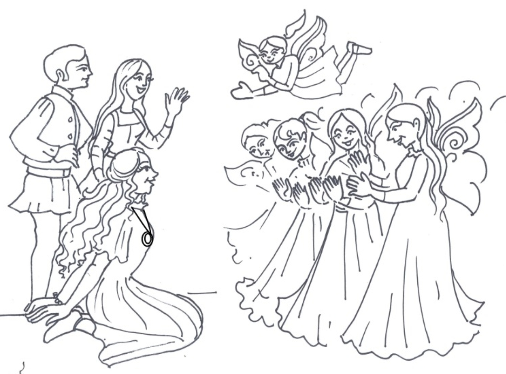
****